<meta charset="utf-8">
<title>Уголок Италии</title>
<meta name="claude:viewport-fit-sides" content="cover">
<link rel="preconnect" href="https://fonts.googleapis.com">
<link rel="preconnect" href="https://fonts.gstatic.com" crossorigin>
<link href="https://fonts.googleapis.com/css2?family=Prata&family=Jost:wght@400;500;600&display=swap" rel="stylesheet">
<style>
/* Layout: палаццо. Фото во всю ширину, мрамор, лагуна, латунь. Три вкладки: идея, конкуренты, результат. */
:root{
  --paper:#f3f1ec;--paper-2:#e9e6df;--ink:#131a19;--ink-2:#4e5755;--ink-3:#7d8582;--line:#d4d0c6;
  --lagoon:#0f2b2a;--lagoon-2:#163a38;--on-lagoon:#efe9dc;--on-lagoon-2:#a9b8b3;
  --brass:#a8873f;--brass-2:#c7a35a;--rosso:#8e2a34;--ok:#2f6b4f;
  --shadow:0 30px 60px -30px rgba(19,26,25,.35);
  --serif:"Prata",Georgia,"Times New Roman",serif;--sans:"Jost","Segoe UI",Roboto,"Helvetica Neue",Arial,sans-serif;
}
@media (prefers-color-scheme: dark){
  :root:not([data-theme="light"]){
    --paper:#111817;--paper-2:#172020;--ink:#ece8df;--ink-2:#b5b9b3;--ink-3:#848b88;--line:#2a3533;
    --lagoon:#0a1d1c;--lagoon-2:#102927;--on-lagoon:#efe9dc;--on-lagoon-2:#a9b8b3;
    --brass:#c7a35a;--brass-2:#dcc07a;--rosso:#d2707a;--ok:#6fb08f;--shadow:0 30px 60px -30px rgba(0,0,0,.8);color-scheme:dark;
  }
}
:root[data-theme="dark"]{
  --paper:#111817;--paper-2:#172020;--ink:#ece8df;--ink-2:#b5b9b3;--ink-3:#848b88;--line:#2a3533;
  --lagoon:#0a1d1c;--lagoon-2:#102927;--on-lagoon:#efe9dc;--on-lagoon-2:#a9b8b3;
  --brass:#c7a35a;--brass-2:#dcc07a;--rosso:#d2707a;--ok:#6fb08f;--shadow:0 30px 60px -30px rgba(0,0,0,.8);color-scheme:dark;
}
*,*::before,*::after{box-sizing:border-box}
html{-webkit-text-size-adjust:100%;scroll-behavior:smooth}
body{margin:0;background:var(--paper);color:var(--ink);font-family:var(--sans);font-size:17px;line-height:1.5}
body::before{content:"";position:fixed;inset:0 0 auto;height:env(safe-area-inset-top,0px);z-index:40;background:var(--paper)}
img{max-width:100%;display:block}
.wrap{max-width:1200px;margin-inline:auto;padding-left:max(20px, env(safe-area-inset-left, 0px));padding-right:max(20px, env(safe-area-inset-right, 0px))}
section{padding-block:88px}
section + section{border-top:1px solid var(--line)}
h1,h2,h3,h4{font-family:var(--serif);font-weight:400;margin:0;line-height:1.08;text-wrap:balance}
h2{font-size:clamp(34px,5vw,60px);max-width:20ch}
h3{font-size:clamp(21px,2.3vw,27px)}
h4{font-size:19px}
p{margin:0}
.eyebrow{font-size:12px;letter-spacing:.3em;text-transform:uppercase;color:var(--brass);font-weight:600}
.sub{color:var(--ink-2);font-size:18px;max-width:46ch;margin-top:18px}
.note{color:var(--ink-3);font-size:13px}
.head{display:grid;gap:16px;margin-bottom:44px}
.it{font-style:italic}
.tnum{font-variant-numeric:tabular-nums}

/* top + tabs */
.top{position:sticky;top:env(safe-area-inset-top,0px);z-index:30;background:color-mix(in srgb,var(--paper) 92%,transparent);backdrop-filter:blur(10px);-webkit-backdrop-filter:blur(10px);border-bottom:1px solid var(--line)}
.top .wrap{display:flex;align-items:center;justify-content:space-between;gap:16px;min-height:64px;flex-wrap:wrap;padding-block:8px}
.logo{font-family:var(--serif);font-size:19px;white-space:nowrap;line-height:1.1}
.logo small{display:block;font-family:var(--sans);font-size:10px;letter-spacing:.3em;text-transform:uppercase;color:var(--brass);margin-top:3px}
.tabs{display:flex;gap:4px}
.tab{font:inherit;font-size:14px;font-weight:500;letter-spacing:.08em;text-transform:uppercase;background:transparent;border:0;border-bottom:2px solid transparent;color:var(--ink-2);padding-block:12px;padding-inline:14px;cursor:pointer;min-height:44px}
.tab[aria-selected="true"]{color:var(--ink);border-bottom-color:var(--brass)}
.tab:focus-visible{outline:2px solid var(--brass);outline-offset:2px}
@media (max-width:640px){ .tabs{width:100%;justify-content:space-between} .tab{padding-inline:6px;font-size:12.5px;flex:1;text-align:center} }
.panel[hidden]{display:none}

/* band */
.band{background:var(--lagoon);color:var(--on-lagoon)}
.band + section{border-top:0}
.band .eyebrow{color:var(--brass-2)}
.band .sub,.band .note{color:var(--on-lagoon-2)}
.band h2 em,.band .line-big em,.band h1 em{color:var(--brass-2);font-style:italic}

/* cover: full-bleed photo with text */
.cover{position:relative;padding:0;border-top:0;color:#f3efe6;background:#0a1413;min-height:620px;display:grid;align-items:end}
.cover img.bg{position:absolute;inset:0;width:100%;height:100%;object-fit:cover}
.cover::after{content:"";position:absolute;inset:0;background:linear-gradient(180deg,rgba(10,20,19,.15) 0%,rgba(10,20,19,.35) 45%,rgba(10,20,19,.88) 100%)}
.cover .wrap{position:relative;z-index:1;padding-block:72px 56px;width:100%}
.cover .eyebrow{color:var(--brass-2)}
.cover h1{font-size:clamp(44px,7vw,96px);max-width:12ch;margin-top:18px;color:#f6f2e8}
.cover h1 em{font-style:italic;color:var(--brass-2)}
.cover .sub{color:#d9d5ca;font-size:clamp(17px,2vw,21px);max-width:40ch}
.cover.short{min-height:460px}
.cover.short h1{font-size:clamp(36px,5.4vw,72px);max-width:16ch}
.cover .cap{position:absolute;right:max(20px, env(safe-area-inset-right, 0px));top:20px;z-index:1;font-size:11px;letter-spacing:.14em;text-transform:uppercase;color:#d9d5ca;opacity:.8}

.figures{display:grid;grid-template-columns:repeat(4,1fr);padding-block:36px 0}
.fig{padding-inline:0 20px;display:grid;gap:4px;min-width:0}
.fig + .fig{border-left:1px solid var(--line);padding-left:24px}
.fig b{font-family:var(--serif);font-weight:400;font-size:clamp(38px,4.6vw,60px);line-height:1}
.fig span{font-size:13.5px;color:var(--ink-2)}
@media (max-width:640px){ .figures{grid-template-columns:1fr 1fr;row-gap:28px} .fig:nth-child(3){border-left:0;padding-left:0} }

/* places: alternating photo bands */
.place{display:grid;grid-template-columns:1.15fr .85fr;gap:0;border:1px solid var(--line);margin-top:28px;background:var(--paper)}
.place:first-of-type{margin-top:0}
.place > *{min-width:0}
.place .photos{display:grid;grid-template-columns:2fr 1fr;grid-template-rows:1fr 1fr;gap:4px;min-height:420px}
.place .photos img{width:100%;height:100%;object-fit:cover}
.place .photos .main{grid-row:span 2}
.place .text{padding-block:40px;padding-inline:40px;display:grid;gap:14px;align-content:center}
.place.rev .photos{order:2}
.place .lat{font-family:var(--serif);font-size:clamp(40px,4.6vw,64px);line-height:1;letter-spacing:.02em}
.place .lat em{font-style:italic;color:var(--brass)}
.place .ru{font-size:11.5px;letter-spacing:.26em;text-transform:uppercase;color:var(--ink-3)}
.place .what{color:var(--ink-2);font-size:16px;max-width:38ch}
.place .scenes{display:grid;gap:8px;border-top:1px solid var(--line);padding-top:14px;margin-top:4px}
.place .scenes div{display:grid;grid-template-columns:92px 1fr;gap:12px;font-size:14.5px}
.place .scenes span{font-size:11px;letter-spacing:.18em;text-transform:uppercase;color:var(--brass);padding-top:4px}
.place .rt{font-family:var(--serif);font-size:28px;color:var(--brass);line-height:1}
.place .rt small{font-family:var(--sans);font-size:11px;color:var(--ink-3);letter-spacing:.12em;margin-left:6px}
@media (max-width:900px){ .place{grid-template-columns:1fr} .place.rev .photos{order:0} .place .photos{min-height:300px;height:320px} .place .text{padding-block:28px;padding-inline:24px} }

/* dishes */
.dishes{display:grid;grid-template-columns:repeat(4,1fr);gap:12px}
.dish{position:relative;min-width:0;overflow:hidden;background:var(--paper-2)}
.dish img{width:100%;height:250px;object-fit:cover}
.dish.big{grid-column:span 2}
.dish .cap{position:absolute;left:0;right:0;bottom:0;padding-block:12px;padding-inline:14px;background:linear-gradient(transparent,rgba(10,20,19,.82));color:#efe9dc;display:flex;justify-content:space-between;gap:8px;align-items:baseline}
.dish .cap b{font-family:var(--serif);font-weight:400;font-size:17px}
.dish .cap span{font-size:13px;white-space:nowrap;color:var(--brass-2)}
.dish .tag{position:absolute;top:10px;left:10px;background:var(--brass);color:#141109;font-size:10.5px;font-weight:600;letter-spacing:.16em;text-transform:uppercase;padding-block:5px;padding-inline:9px}
@media (max-width:760px){ .dishes{grid-template-columns:1fr 1fr} .dish img{height:180px} }

/* venezia band with photo */
.venezia{position:relative;padding:0;border-top:0;color:#f3efe6;background:#0a1413;overflow:hidden}
.venezia img.bg{position:absolute;inset:0;width:100%;height:100%;object-fit:cover;opacity:.55}
.venezia::after{content:"";position:absolute;inset:0;background:linear-gradient(90deg,rgba(10,20,19,.92) 0%,rgba(10,20,19,.75) 55%,rgba(10,20,19,.35) 100%)}
.venezia .wrap{position:relative;z-index:1;padding-block:80px}
.venezia h2{color:#f6f2e8}
.venezia h2 em{color:var(--brass-2);font-style:italic}
.venezia .sub{color:#d9d5ca}
.venezia .eyebrow{color:var(--brass-2)}
.vlist{display:grid;grid-template-columns:repeat(3,1fr);gap:12px;margin-top:40px}
.vlist > div{min-width:0;background:rgba(10,20,19,.55);border:1px solid rgba(239,233,220,.2);backdrop-filter:blur(6px);display:grid}
.vlist img{width:100%;height:170px;object-fit:cover}
.vlist .t{padding-block:14px 16px;padding-inline:16px;display:grid;gap:4px}
.vlist b{font-family:var(--serif);font-weight:400;font-size:20px}
.vlist span{font-size:13.5px;color:#d9d5ca}
@media (max-width:760px){ .vlist{grid-template-columns:1fr} .venezia::after{background:rgba(10,20,19,.8)} }

/* week */
.week{display:grid;grid-template-columns:repeat(3,1fr);gap:12px}
.day{position:relative;min-width:0;overflow:hidden;min-height:360px;display:grid;align-items:end;background:var(--paper-2)}
.day img{position:absolute;inset:0;width:100%;height:100%;object-fit:cover}
.day::after{content:"";position:absolute;inset:0;background:linear-gradient(transparent 30%,rgba(10,20,19,.9))}
.day .t{position:relative;z-index:1;padding-block:20px;padding-inline:20px;color:#efe9dc;display:grid;gap:6px}
.day .k{font-size:11px;letter-spacing:.24em;text-transform:uppercase;color:var(--brass-2)}
.day b{font-family:var(--serif);font-weight:400;font-size:26px;line-height:1.1}
.day span{font-size:14px;color:#d9d5ca}
@media (max-width:760px){ .week{grid-template-columns:1fr} .day{min-height:240px} }

/* platform */
.line-big{font-family:var(--serif);font-size:clamp(32px,5.2vw,70px);line-height:1.06;max-width:17ch;margin-top:8px}
.plat{display:grid;grid-template-columns:repeat(3,1fr);gap:1px;background:color-mix(in srgb,var(--on-lagoon) 18%,transparent);border:1px solid color-mix(in srgb,var(--on-lagoon) 18%,transparent);margin-top:48px}
.plat > div{background:var(--lagoon);padding-block:28px;padding-inline:26px;display:grid;gap:10px;align-content:start;min-width:0}
.plat .k{font-size:11.5px;letter-spacing:.26em;text-transform:uppercase;color:var(--brass-2)}
.plat .v{font-family:var(--serif);font-size:clamp(20px,2.2vw,26px);line-height:1.2}
.plat .d{font-size:14.5px;color:var(--on-lagoon-2)}
@media (max-width:860px){ .plat{grid-template-columns:1fr} }

/* funnel */
.flow{display:grid;grid-template-columns:1fr auto 1fr}
.step{border:1px solid var(--line);padding-block:26px;padding-inline:24px;display:grid;gap:8px;align-content:start;min-width:0}
.step .k{font-size:11.5px;letter-spacing:.24em;text-transform:uppercase;color:var(--ink-3)}
.step .v{font-family:var(--serif);font-size:clamp(24px,2.6vw,32px);line-height:1.1}
.step.ok{border-color:var(--brass)}
.step.fail{border-color:var(--rosso)}
.arrow{display:grid;place-items:center;padding-inline:12px;color:var(--ink-3)}
.arrow svg{width:34px;height:14px}
.fails{list-style:none;margin:6px 0 0;padding:0;display:grid;gap:8px}
.fails li{display:grid;grid-template-columns:16px 1fr;gap:10px;font-size:15px;color:var(--ink-2)}
.fails svg{width:12px;height:12px;margin-top:6px;color:var(--rosso)}
@media (max-width:900px){ .flow{grid-template-columns:1fr} .arrow{padding-block:8px} .arrow svg{transform:rotate(90deg)} }

/* bars */
.chart{display:grid;gap:14px}
.row{display:grid;grid-template-columns:150px 1fr 70px;gap:14px;align-items:center}
.row .lb{font-size:15px}
.row .val{font-family:var(--serif);font-size:22px;text-align:right;font-variant-numeric:tabular-nums}
.track{position:relative;height:10px;background:var(--paper-2)}
.fill{position:absolute;top:0;bottom:0;left:0;background:var(--lagoon)}
.row.neg .fill{background:var(--rosso)}
.row.neg .val{color:var(--rosso)}
.row.me .fill{background:var(--brass)}
.row.me .lb{font-weight:600}
@media (max-width:520px){ .row{grid-template-columns:104px 1fr 54px;gap:10px} .row .lb{font-size:13.5px} .row .val{font-size:19px} }
.two{display:grid;grid-template-columns:1fr 1fr;gap:64px;align-items:start}
.two > *{min-width:0}
@media (max-width:900px){ .two{grid-template-columns:1fr;gap:48px} }

/* mockup */
.browser{border:1px solid var(--line);background:var(--paper);box-shadow:var(--shadow)}
.chrome{display:flex;align-items:center;gap:7px;padding-block:12px;padding-inline:16px;border-bottom:1px solid var(--line);background:var(--paper-2)}
.chrome i{width:9px;height:9px;border-radius:50%;background:var(--line)}
.chrome span{margin-left:12px;font-size:12px;color:var(--ink-3);background:var(--paper);padding-block:4px;padding-inline:12px;border-radius:20px}
.site{padding-block:24px 32px;padding-inline:clamp(18px,4vw,48px)}
.snav{display:flex;align-items:center;justify-content:space-between;gap:16px;flex-wrap:wrap}
.links{display:flex;gap:26px;font-size:13.5px;color:var(--ink-2);letter-spacing:.04em}
.btn{display:inline-block;background:var(--lagoon);color:var(--on-lagoon);font-size:12.5px;font-weight:500;letter-spacing:.12em;text-transform:uppercase;padding-block:12px;padding-inline:20px}
.btn.o{background:transparent;color:var(--ink);border:1px solid var(--ink)}
.shero{display:grid;grid-template-columns:1fr 1.1fr;gap:40px;align-items:center;margin-top:40px}
.shero > *{min-width:0}
.shero h3{font-size:clamp(30px,4vw,52px);line-height:1.04}
.shero h3 em{font-style:italic;color:var(--brass)}
.shero p{color:var(--ink-2);margin-top:14px;font-size:15px;max-width:36ch}
.sbtns{display:flex;gap:12px;flex-wrap:wrap;margin-top:24px}
.shero .ph{overflow:hidden;max-width:100%}
.shero .ph img{width:100%;height:320px;object-fit:cover}
.mini{display:grid;grid-template-columns:repeat(3,1fr);gap:1px;background:var(--line);border:1px solid var(--line);margin-top:28px}
.mini .cell{background:var(--paper);min-width:0;display:grid}
.mini .cell img{width:100%;height:150px;object-fit:cover}
.mini .t{padding-block:12px 14px;padding-inline:12px;display:flex;justify-content:space-between;gap:8px;align-items:baseline}
.mini b{font-family:var(--serif);font-weight:400;font-size:17px;letter-spacing:.03em}
.mini b small{display:block;font-family:var(--sans);font-size:10.5px;color:var(--ink-3);letter-spacing:.14em;text-transform:uppercase;margin-top:3px}
.mini em{font-style:normal;color:var(--brass);font-family:var(--serif);font-size:18px}
.strip{margin-top:28px;border-top:1px solid var(--line);padding-top:16px;display:flex;justify-content:space-between;gap:16px;flex-wrap:wrap;font-size:13.5px;color:var(--ink-2)}
.strip b{color:var(--ink);font-weight:500}
@media (max-width:820px){ .shero{grid-template-columns:1fr} .links{display:none} }

/* plan */
.plan{display:grid;grid-template-columns:repeat(3,1fr);border-top:1px solid var(--line)}
.stage{padding-block:30px 0;padding-inline:0 28px;display:grid;gap:14px;align-content:start;min-width:0}
.stage + .stage{border-left:1px solid var(--line);padding-left:28px}
.d{font-family:var(--serif);font-size:clamp(56px,7vw,92px);line-height:.9;color:var(--brass)}
.d small{font-family:var(--sans);font-size:12px;letter-spacing:.24em;text-transform:uppercase;color:var(--ink-3);margin-left:8px}
.stage ul{list-style:none;margin:0;padding:0;display:grid;gap:9px}
.stage li{font-size:15px;color:var(--ink-2);padding-left:18px;position:relative}
.stage li::before{content:"";position:absolute;left:0;top:.7em;width:8px;height:1px;background:var(--brass)}
@media (max-width:860px){ .plan{grid-template-columns:1fr} .stage + .stage{border-left:0;border-top:1px solid var(--line);padding-left:0} .stage{padding-bottom:30px} }

/* cards */
.cards{display:grid;grid-template-columns:repeat(3,1fr);gap:1px;background:var(--line);border:1px solid var(--line)}
.cards.c4{grid-template-columns:repeat(4,1fr)}
.card{background:var(--paper);padding-block:24px;padding-inline:22px;display:grid;gap:8px;align-content:start;min-width:0}
.card .k{font-size:11.5px;letter-spacing:.24em;text-transform:uppercase;color:var(--brass)}
.card b.t{font-family:var(--serif);font-weight:400;font-size:21px;line-height:1.2}
.card p{font-size:14.5px;color:var(--ink-2)}
.card .num{font-family:var(--serif);font-size:clamp(34px,4vw,52px);line-height:1;color:var(--ink)}
.card .num.bad{color:var(--rosso)}
.card.pick{background:var(--lagoon);color:var(--on-lagoon)}
.card.pick p{color:var(--on-lagoon-2)}
.card.pick .k{color:var(--brass-2)}
.card.img{padding:0}
.card.img img{width:100%;height:190px;object-fit:cover}
.card.img .in{padding-block:18px 22px;padding-inline:20px;display:grid;gap:8px}
@media (max-width:900px){ .cards,.cards.c4{grid-template-columns:1fr 1fr} }
@media (max-width:540px){ .cards,.cards.c4{grid-template-columns:1fr} }

/* comparison table */
.scroller{overflow-x:auto;border:1px solid var(--line);background:var(--paper)}
.cmp{border-collapse:collapse;min-width:980px;width:100%;font-size:14px}
.cmp th,.cmp td{text-align:left;vertical-align:middle;padding-block:12px;padding-inline:12px;border-top:1px solid var(--line);white-space:nowrap}
.cmp thead th{font-size:11px;letter-spacing:.14em;text-transform:uppercase;color:var(--ink-3);font-weight:600;border-top:0;border-bottom:1px solid var(--ink)}
.cmp tbody th{font-weight:500;position:sticky;left:0;background:var(--paper);z-index:1;min-width:190px}
.cmp tbody th small{display:block;font-size:12px;color:var(--ink-3);font-weight:400}
.cmp tr.me th,.cmp tr.me td{background:color-mix(in srgb,var(--brass) 14%,var(--paper))}
.cmp tr.me th{font-weight:600}
.pill{display:inline-block;font-size:11.5px;letter-spacing:.06em;padding-block:3px;padding-inline:9px;border-radius:20px;border:1px solid var(--line);color:var(--ink-2)}
.pill.y{background:var(--ok);border-color:var(--ok);color:#fff}
.pill.n{background:var(--rosso);border-color:var(--rosso);color:#fff}
.pill.q{color:var(--ink-3)}
.hint{font-size:13px;color:var(--ink-3);margin-top:10px}

/* positioning map */
.map{border:1px solid var(--line);background:var(--paper);padding-block:20px;padding-inline:12px;overflow-x:auto}
.map svg{width:100%;min-width:640px;height:auto;display:block;font-family:var(--sans)}
.map .ax{stroke:var(--line);stroke-width:1}
.map .lbl{fill:var(--ink-3);font-size:11px;letter-spacing:.08em;text-transform:uppercase}
.map .pt{fill:var(--ink-2)}
.map .pn{fill:var(--ink);font-size:12.5px}
.map .me{fill:var(--brass)}
.map .mn{fill:var(--ink);font-size:13px;font-weight:600}
.map .zone{fill:color-mix(in srgb,var(--brass) 14%,transparent);stroke:var(--brass);stroke-dasharray:4 4}
.map .zt{fill:var(--brass);font-size:12.5px;font-weight:600}
.map .ar{fill:none;stroke:var(--brass);stroke-width:1.6;marker-end:url(#ah)}

/* before / after */
.ba{display:grid;grid-template-columns:1fr 1fr;gap:1px;background:var(--line);border:1px solid var(--line)}
.ba > div{min-width:0;padding-block:26px;padding-inline:24px;display:grid;gap:14px;align-content:start}
.ba .was{background:var(--paper)}
.ba .will{background:var(--lagoon);color:var(--on-lagoon)}
.ba .k{font-size:11.5px;letter-spacing:.26em;text-transform:uppercase;color:var(--ink-3)}
.ba .will .k{color:var(--brass-2)}
.ba ul{list-style:none;margin:0;padding:0;display:grid;gap:10px}
.ba li{display:grid;grid-template-columns:18px 1fr;gap:10px;font-size:15.5px}
.ba li svg{width:14px;height:14px;margin-top:5px}
.ba .was li{color:var(--ink-2)}
.ba .will li{color:var(--on-lagoon)}
@media (max-width:760px){ .ba{grid-template-columns:1fr} }

.qs{display:grid;grid-template-columns:repeat(3,1fr);gap:1px;background:var(--line);border:1px solid var(--line)}
.q{background:var(--paper);padding-block:24px;padding-inline:22px;display:grid;gap:6px;min-width:0}
.q b{font-family:var(--serif);font-weight:400;font-size:21px;line-height:1.2}
.q span{font-size:13.5px;color:var(--ink-3)}
@media (max-width:900px){ .qs{grid-template-columns:1fr 1fr} }
@media (max-width:520px){ .qs{grid-template-columns:1fr} }

.refs{display:grid;grid-template-columns:repeat(3,1fr);gap:1px;background:var(--line);border:1px solid var(--line)}
.ref{background:var(--paper);padding-block:22px;padding-inline:22px;display:grid;gap:6px;min-width:0}
.ref .w{font-size:11px;letter-spacing:.2em;text-transform:uppercase;color:var(--ink-3)}
.ref b{font-family:var(--serif);font-weight:400;font-size:21px}
.ref p{font-size:14.5px;color:var(--ink-2)}
@media (max-width:900px){ .refs{grid-template-columns:1fr 1fr} }
@media (max-width:540px){ .refs{grid-template-columns:1fr} }

footer{padding-block:40px 72px;border-top:1px solid var(--line)}
footer .wrap{display:flex;justify-content:space-between;gap:20px;flex-wrap:wrap;align-items:center}
@media (max-width:640px){ section{padding-block:64px} .head{margin-bottom:32px} .cover{min-height:520px} }
@media (prefers-reduced-motion: reduce){ html{scroll-behavior:auto} }
</style>

<header class="top">
  <div class="wrap">
    <div class="logo">Траттория Венеция<small>Уголок Италии в Москве</small></div>
    <nav class="tabs" role="tablist" aria-label="Разделы презентации">
      <button class="tab" role="tab" id="tab-idea" aria-controls="idea" aria-selected="true" data-hash="idea">Идея</button>
      <button class="tab" role="tab" id="tab-rivals" aria-controls="rivals" aria-selected="false" data-hash="rivals">Конкуренты</button>
      <button class="tab" role="tab" id="tab-world" aria-controls="world" aria-selected="false" data-hash="world">Мир</button>
      <button class="tab" role="tab" id="tab-result" aria-controls="result" aria-selected="false" data-hash="result">Результат</button>
    </nav>
  </div>
</header>

<main>

<!-- ============ ИДЕЯ ============ -->
<div class="panel" id="idea" role="tabpanel" aria-labelledby="tab-idea">

<section class="cover">
  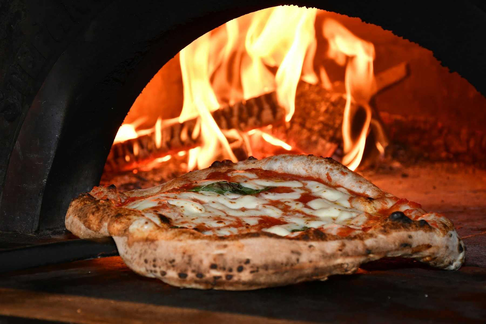
  <span class="cap">Forno · Маяковская</span>
  <div class="wrap">
    <p class="eyebrow">Идея бренда</p>
    <h1>Один уголок Италии. <em>Три итальянских вечера.</em></h1>
    <p class="sub">Имя и слоган остаются. У каждого адреса появляется своё итальянское имя, своё блюдо и свой повод прийти.</p>
  </div>
</section>

<section style="padding-top:0;border-top:0">
  <div class="wrap">
    <div class="figures">
      <div class="fig"><b class="tnum">8 075</b><span>оценок на Яндекс Картах</span></div>
      <div class="fig"><b>15+</b><span>лет в центре Москвы</span></div>
      <div class="fig"><b>96%</b><span>гостей хвалят атмосферу</span></div>
      <div class="fig"><b>−24%</b><span>Маргарита дешевле медианы соседей</span></div>
    </div>
  </div>
</section>

<section>
  <div class="wrap">
    <div class="head">
      <p class="eyebrow">Три адреса</p>
      <h2>У каждого места своё имя, своя сцена, своё блюдо</h2>
      <p class="sub">Соседи показывают одинаковые залы. Здесь три разных вечера, и все три уже существуют.</p>
    </div>

    <article class="place">
      <div class="photos">
        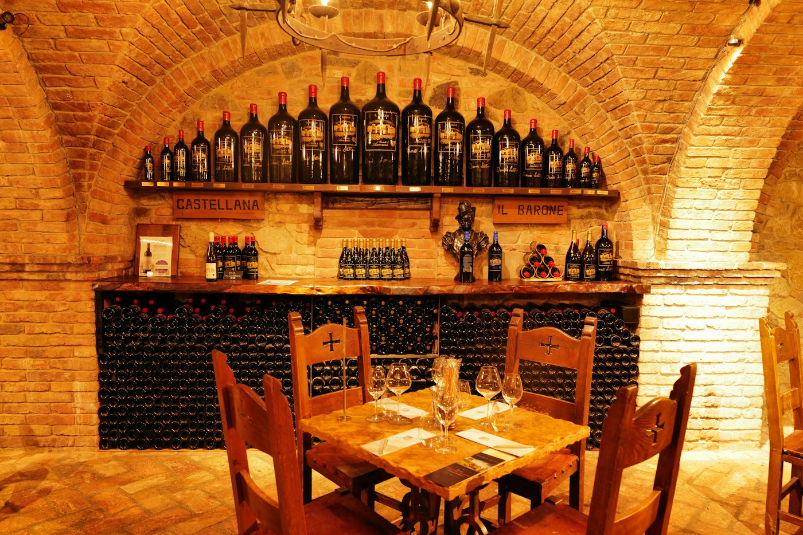
        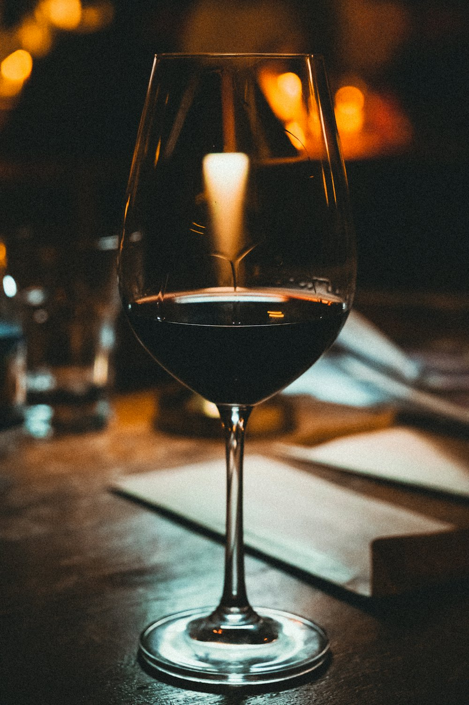
        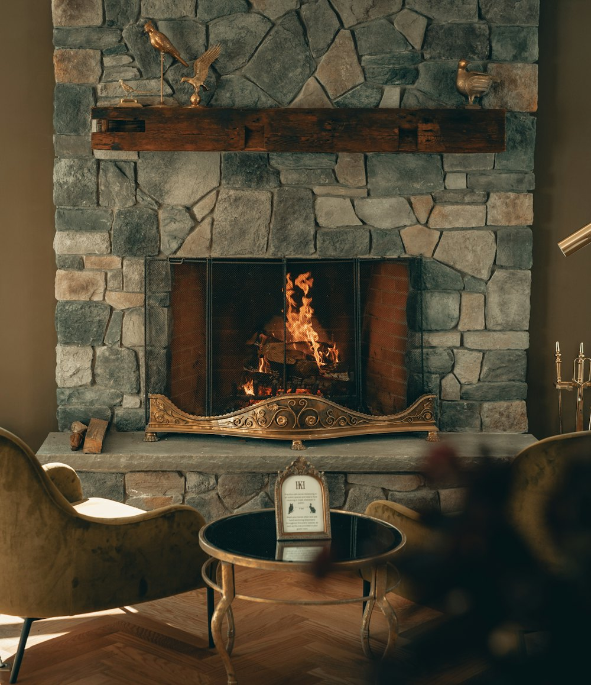
      </div>
      <div class="text">
        <div class="lat">Can<em>tina</em></div>
        <div class="ru">Страстной бульвар, 4 · первая траттория сети</div>
        <p class="what">Погреб с кирпичными сводами, камин, мягкие диваны. Самое тихое место из трёх.</p>
        <div class="scenes">
          <div><span>Вечер</span>У камина с бутылкой Valpolicella</div>
          <div><span>Блюдо</span>Тальятелле с белыми грибами, 1 050 ₽</div>
          <div><span>Повод</span>Свидание, разговор вдвоём, зима</div>
        </div>
        <div class="rt">4,6<small>Яндекс · 3 580 оценок</small></div>
      </div>
    </article>

    <article class="place rev">
      <div class="photos">
        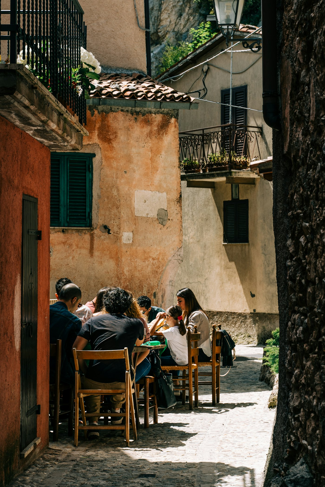
        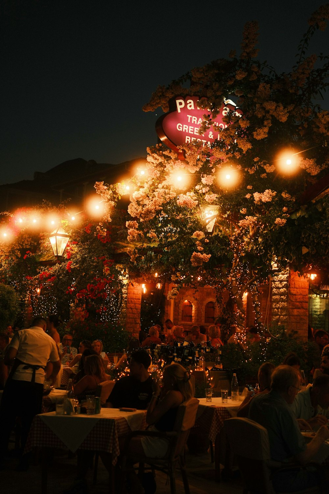
        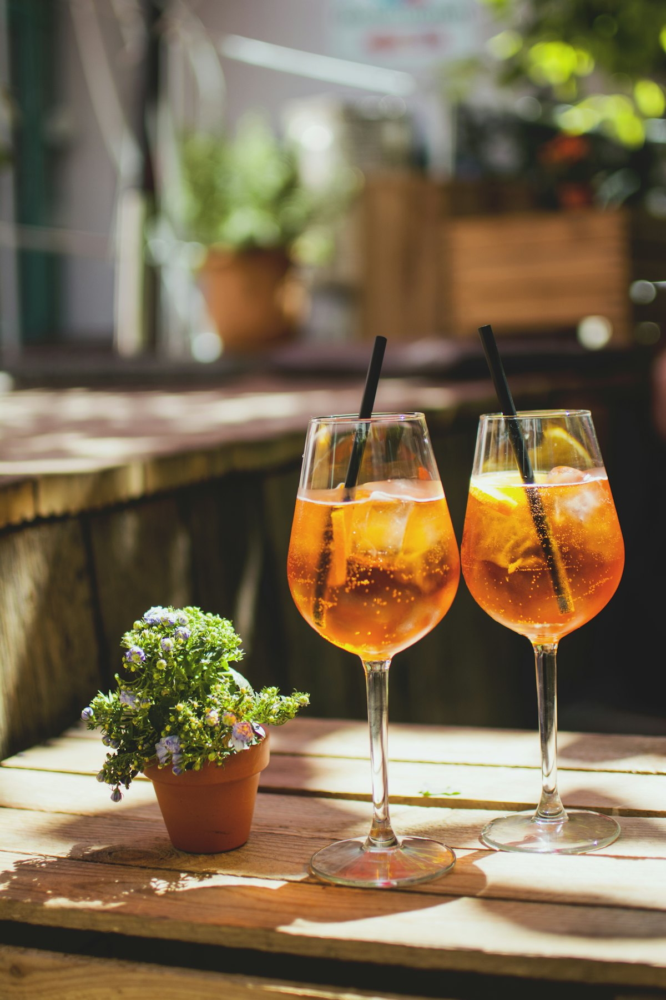
      </div>
      <div class="text">
        <div class="lat">Cor<em>tile</em></div>
        <div class="ru">Столешников переулок, 9</div>
        <p class="what">Тихий двор за аркой, летняя веранда, столик на двоих в отдельной комнате.</p>
        <div class="scenes">
          <div><span>Вечер</span>Спритц на веранде, обед во дворе</div>
          <div><span>Блюдо</span>Спагетти nero di seppia, 1 070 ₽</div>
          <div><span>Повод</span>Лето, аперитив после работы, встреча</div>
        </div>
        <div class="rt">4,7<small>Яндекс · 2 110 оценок</small></div>
      </div>
    </article>

    <article class="place">
      <div class="photos">
        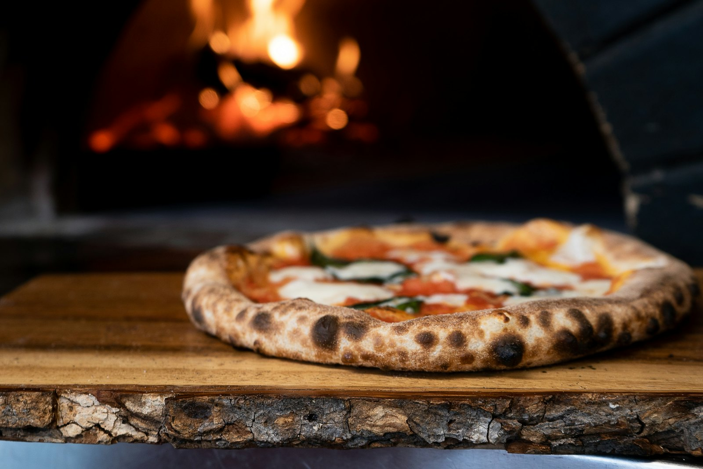
        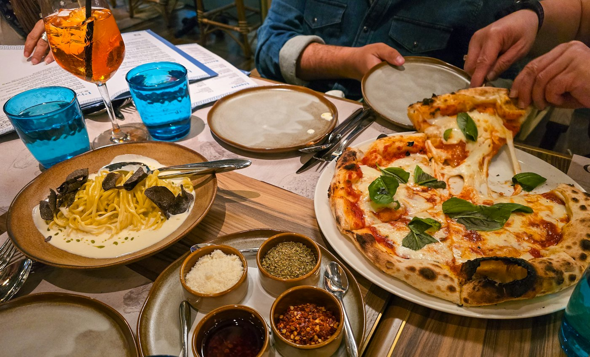
        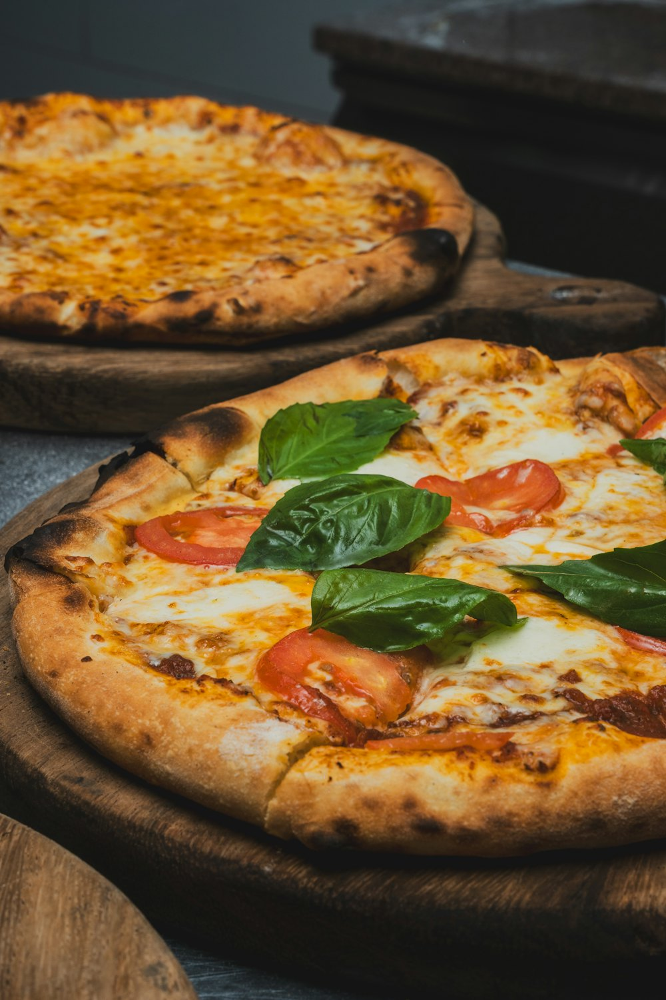
      </div>
      <div class="text">
        <div class="lat">For<em>no</em></div>
        <div class="ru">4-я Тверская-Ямская, 2</div>
        <p class="what">Дровяная печь прямо в зале, отдельный зал для торжеств, веранда летом. Лучший сервис в сети.</p>
        <div class="scenes">
          <div><span>Вечер</span>Пицца из печи после работы, семейное воскресенье</div>
          <div><span>Блюдо</span>Маргарита из дровяной печи, 650 ₽</div>
          <div><span>Повод</span>Дети, компания, день рождения</div>
        </div>
        <div class="rt">4,8<small>Яндекс · 2 385 оценок</small></div>
      </div>
    </article>
    <p class="note" style="margin-top:14px">Фотографии: Unsplash, свободная лицензия. Это уровень съёмки, который нужен. На сайте будут свои залы и свои блюда.</p>
  </div>
</section>

<section class="band">
  <div class="wrap">
    <div class="head">
      <p class="eyebrow">Блюда-герои</p>
      <h2>Что гость увидит <em>до того, как придёт</em></h2>
      <p class="sub">Сейчас на сайте нет ни одного фото еды. У 11 из 12 соседей меню с ценами есть хотя бы в карточке Яндекса. Цены ниже из действующего меню.</p>
    </div>
    <div class="dishes">
      <figure class="dish big" style="margin:0"><span class="tag">Дешевле соседей</span><figcaption class="cap"><b>Маргарита из дровяной печи</b><span>650 ₽</span></figcaption></figure>
      <figure class="dish" style="margin:0">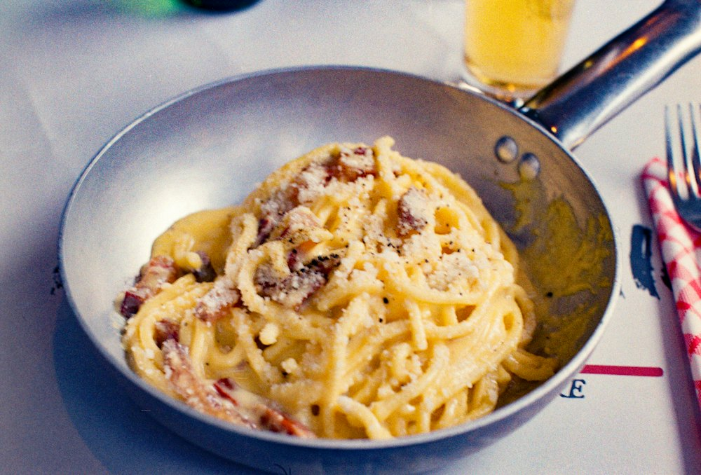<figcaption class="cap"><b>Карбонара</b><span>890 ₽</span></figcaption></figure>
      <figure class="dish" style="margin:0">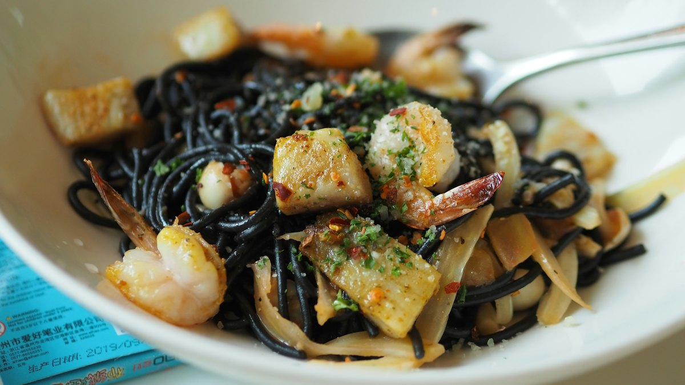<figcaption class="cap"><b>Nero di seppia</b><span>1 070 ₽</span></figcaption></figure>
      <figure class="dish" style="margin:0">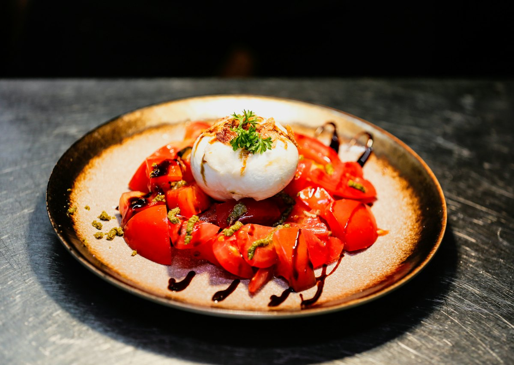<figcaption class="cap"><b>Буррата с томатами</b><span>990 ₽</span></figcaption></figure>
      <figure class="dish" style="margin:0">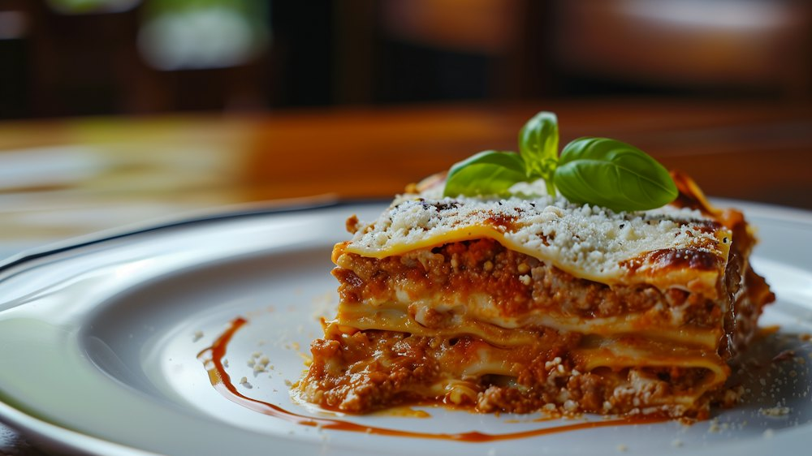<figcaption class="cap"><b>Лазанья</b><span>890 ₽</span></figcaption></figure>
      <figure class="dish" style="margin:0">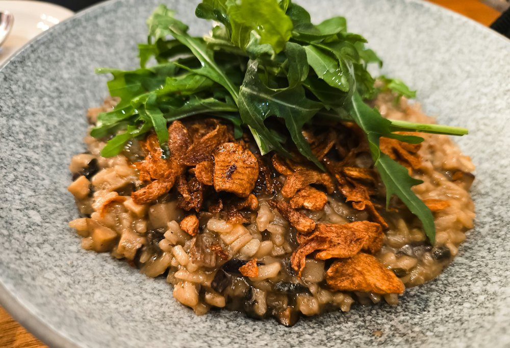<figcaption class="cap"><b>Ризотто с белыми грибами</b><span>1 050 ₽</span></figcaption></figure>
      <figure class="dish" style="margin:0">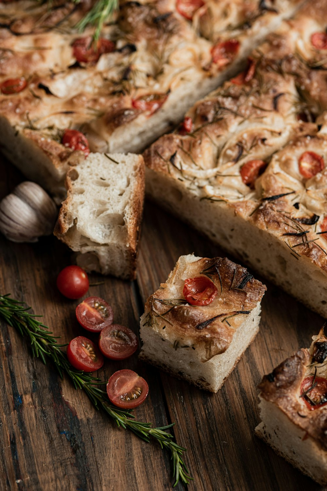<figcaption class="cap"><b>Фокачча с розмарином</b><span>270 ₽</span></figcaption></figure>
      <figure class="dish" style="margin:0">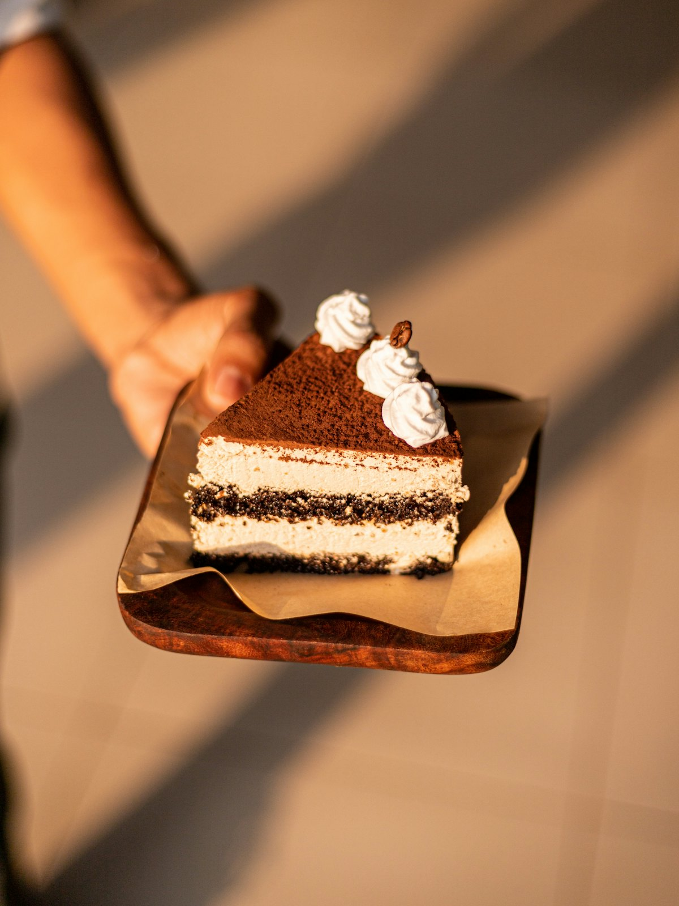<figcaption class="cap"><b>Тирамису</b><span>570 ₽</span></figcaption></figure>
      <figure class="dish" style="margin:0">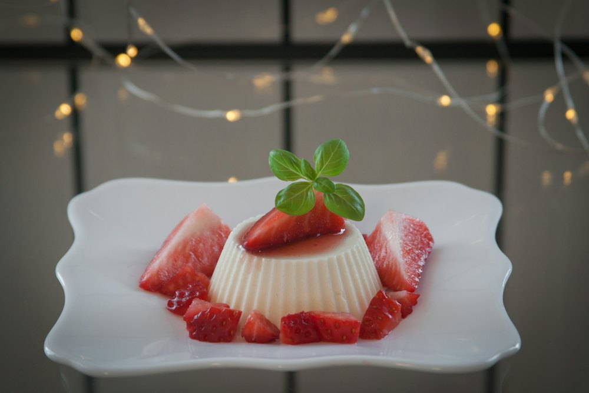<figcaption class="cap"><b>Панакота</b><span>490 ₽</span></figcaption></figure>
      <figure class="dish" style="margin:0">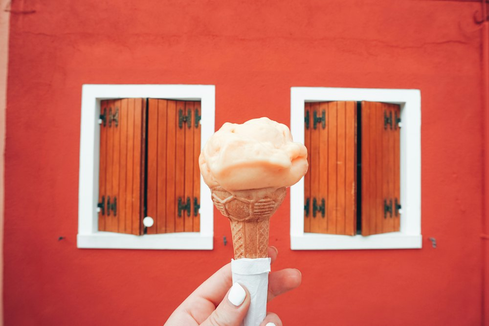<figcaption class="cap"><b>Домашнее мороженое</b><span>230 ₽ шарик</span></figcaption></figure>
    </div>
  </div>
</section>

<section class="venezia">
  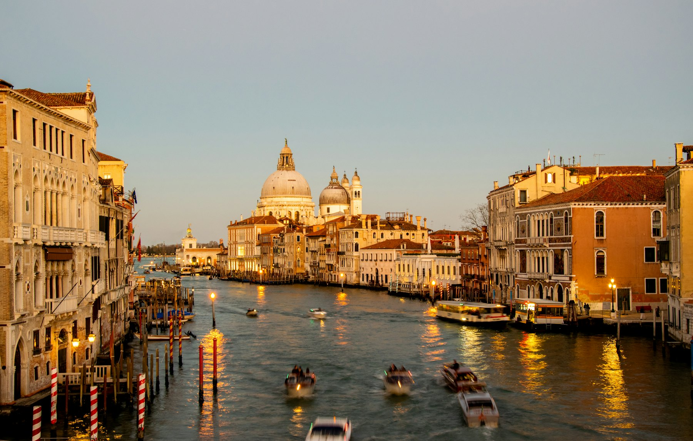
  <div class="wrap">
    <p class="eyebrow">Un po' di Venezia</p>
    <h2 style="margin-top:14px">Венеция в имени. Теперь и <em>в меню</em></h2>
    <p class="sub">Соседи продают Рим, Тоскану и Неаполь. Венето не продаёт никто. Блок собирается из того, что кухня уже готовит, плюс закуски к вину.</p>
    <div class="vlist">
      <div>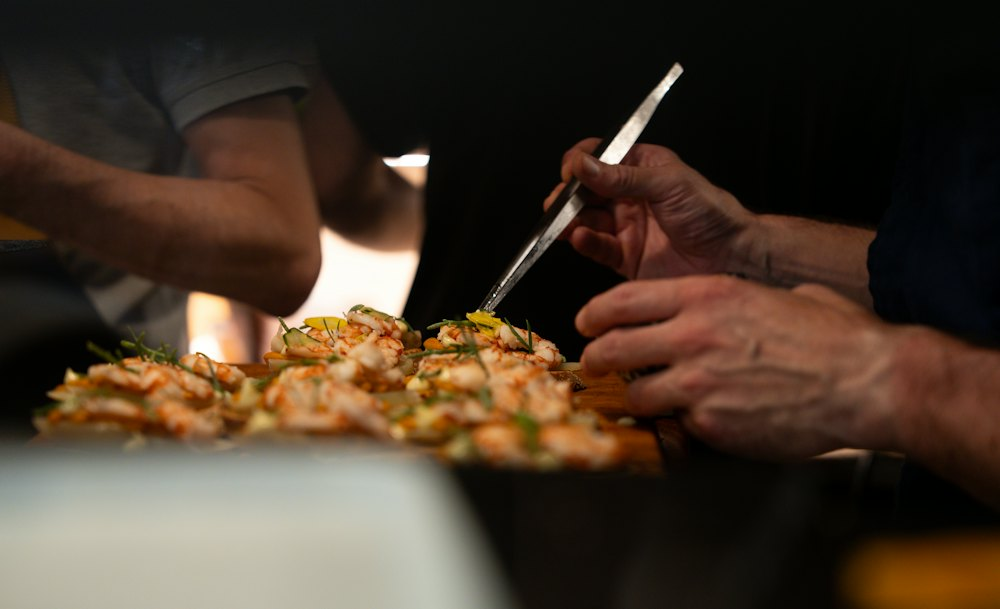<div class="t"><b>Cicchetti</b><span>Венецианские закуски к бокалу. 3–5 позиций, новое</span></div></div>
      <div><div class="t"><b>Nero di seppia</b><span>Паста и ризотто с чернилами каракатицы. Уже в меню</span></div></div>
      <div>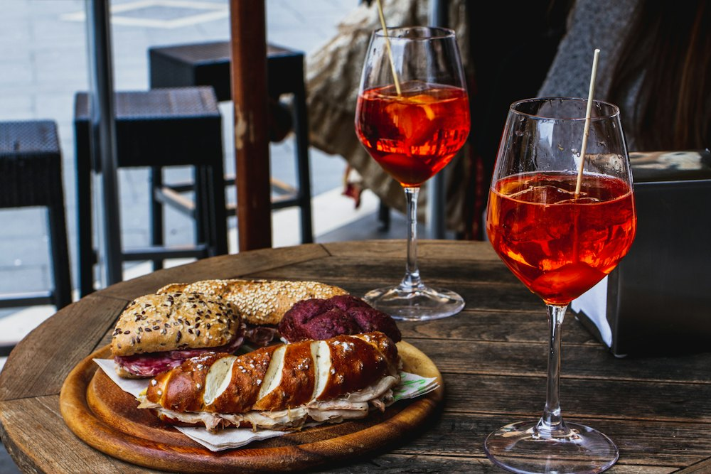<div class="t"><b>Spritz e Prosecco</b><span>Аперитив по-венециански. Уже в меню</span></div></div>
    </div>
  </div>
</section>

<section>
  <div class="wrap">
    <div class="head">
      <p class="eyebrow">Итальянские вечера</p>
      <h2>Повод прийти в будни</h2>
      <p class="sub">Позитано заполняет будни календарём: суббота вино, воскресенье пицца. У «Венеции» поводов три, по характеру каждой точки.</p>
    </div>
    <div class="week">
      <div class="day"><div class="t"><span class="k">Вторник · Cortile</span><b>Венецианский аперитив</b><span>Spritz и чикетти по цене аперитива с 17 до 20</span></div></div>
      <div class="day"><div class="t"><span class="k">Четверг · Cantina</span><b>Вечер у камина</b><span>Бутылка вина недели и сырная тарелка на двоих</span></div></div>
      <div class="day"><div class="t"><span class="k">Воскресенье · Forno</span><b>Семейная пицца из печи</b><span>Вторая пицца детям, печь видно из зала</span></div></div>
    </div>
    <p class="note" style="margin-top:14px">Механики условные, решает кухня и экономика. Важен принцип: у каждого адреса свой день и свой повод.</p>
  </div>
</section>

<section>
  <div class="wrap two">
    <div>
      <div class="head" style="margin-bottom:28px">
        <p class="eyebrow">Диагноз</p>
        <h2>Карты приводят. Сайт <span class="it">теряет</span>.</h2>
      </div>
      <div class="flow">
        <div class="step ok"><span class="k">01 · Яндекс Карты</span><span class="v">Гость находит вас</span><span class="note">Топ-5 у трёх станций метро</span></div>
        <div class="arrow" aria-hidden="true"><svg viewBox="0 0 34 14"><path d="M0 7H31M25 1L32 7L25 13" fill="none" stroke="currentColor" stroke-width="1.3"/></svg></div>
        <div class="step fail"><span class="k">02 · Сайт</span>
          <ul class="fails">
            <li><svg viewBox="0 0 14 14" aria-hidden="true"><path d="M2 2L12 12M12 2L2 12" stroke="currentColor" stroke-width="1.5"/></svg>Нет онлайн-брони</li>
            <li><svg viewBox="0 0 14 14" aria-hidden="true"><path d="M2 2L12 12M12 2L2 12" stroke="currentColor" stroke-width="1.5"/></svg>Нет фото и цен</li>
            <li><svg viewBox="0 0 14 14" aria-hidden="true"><path d="M2 2L12 12M12 2L2 12" stroke="currentColor" stroke-width="1.5"/></svg>Доставка ведёт в пустоту</li>
            <li><svg viewBox="0 0 14 14" aria-hidden="true"><path d="M2 2L12 12M12 2L2 12" stroke="currentColor" stroke-width="1.5"/></svg>В поиске меню 2020 года</li>
          </ul>
        </div>
      </div>
    </div>
    <div>
      <div class="head" style="margin-bottom:28px">
        <p class="eyebrow">Голос гостей</p>
        <h2>Место любят. Сервис <span class="it">нет</span>.</h2>
      </div>
      <div class="chart" role="img" aria-label="Доля положительных отзывов: атмосфера 96, интерьер 92, еда 83, персонал 65, ожидание 57 процентов">
        <div class="row"><span class="lb">Атмосфера</span><div class="track"><span class="fill" style="width:96%"></span></div><span class="val">96%</span></div>
        <div class="row"><span class="lb">Интерьер</span><div class="track"><span class="fill" style="width:92%"></span></div><span class="val">92%</span></div>
        <div class="row"><span class="lb">Еда</span><div class="track"><span class="fill" style="width:83%"></span></div><span class="val">83%</span></div>
        <div class="row neg"><span class="lb">Персонал</span><div class="track"><span class="fill" style="width:65%"></span></div><span class="val">65%</span></div>
        <div class="row neg"><span class="lb">Ожидание</span><div class="track"><span class="fill" style="width:57%"></span></div><span class="val">57%</span></div>
      </div>
      <p class="note" style="margin-top:14px">Доля положительных отзывов на Яндекс Картах. Персонал и ожидание: Страстной и Столешников. На Маяковской 83% и 80%.</p>
    </div>
  </div>
</section>

<section class="band">
  <div class="wrap">
    <p class="eyebrow">Платформа бренда</p>
    <p class="line-big">Уголок Италии в Москве. <em>Cantina, cortile, forno.</em></p>
    <div class="plat">
      <div><span class="k">Обещание</span><span class="v">Итальянский вечер в двух шагах от бульваров, без переплаты за центр</span><span class="d">Так говорят сами гости: уютно, тихо, вкусно, недорого</span></div>
      <div><span class="k">Доказательства</span><span class="v">Своды и камин. Двор за аркой. Дровяная печь. Больше 15 лет</span><span class="d">Всё это уже есть. Сайт об этом молчит, у соседей этого нет</span></div>
      <div><span class="k">Тон</span><span class="v">Спокойный, тёплый, с итальянским словом там, где оно точное</span><span class="d">Без восторгов и без обещаний, которых не выдержит зал</span></div>
    </div>
    <div class="plat" style="margin-top:1px;border-top:0">
      <div><span class="k">Имя и слоган</span><span class="v">Остаются</span><span class="d">8 075 оценок привязаны к «Траттории Венеция»</span></div>
      <div><span class="k">Что занять</span><span class="v">Слово «траттория» в центре и Венето в меню</span><span class="d">В радиусе тратторией не называется никто</span></div>
      <div><span class="k">Первой показывать</span><span class="v">Маяковскую</span><span class="d">Лучший рейтинг и лучший сервис в сети</span></div>
    </div>
  </div>
</section>

<section>
  <div class="wrap">
    <div class="head">
      <p class="eyebrow">Новая главная</p>
      <h2>Что гость увидит <span class="it">первым</span></h2>
    </div>
    <div class="browser" role="img" aria-label="Набросок новой главной страницы сайта">
      <div class="chrome"><i></i><i></i><i></i><span>https://venezia.menu</span></div>
      <div class="site">
        <div class="snav">
          <div class="logo">Траттория Венеция<small>Уголок Италии в Москве</small></div>
          <span class="links"><span>Меню</span><span>Траттории</span><span>Торжества</span><span>Обед</span></span>
          <span class="btn">Забронировать</span>
        </div>
        <div class="shero">
          <div>
            <h3>Три итальянских вечера <em>в центре Москвы</em></h3>
            <p>Погреб со сводами на Страстном, двор в Столешниковом, дровяная печь на Маяковской. Больше 15 лет, 8 000 оценок на Яндексе.</p>
            <div class="sbtns"><span class="btn">Забронировать стол</span><span class="btn o">Меню с ценами</span></div>
          </div>
          <div class="ph"></div>
        </div>
        <div class="mini">
          <div class="cell"><div class="t"><b>Forno<small>Маяковская · печь</small></b><em>4,8</em></div></div>
          <div class="cell"><div class="t"><b>Cortile<small>Столешников · двор</small></b><em>4,7</em></div></div>
          <div class="cell"><div class="t"><b>Cantina<small>Страстной · своды</small></b><em>4,6</em></div></div>
        </div>
        <div class="strip"><span><b>Обед траттории 690 ₽</b> · суп дня, паста или пицца, морс · будни 12–16</span><span>Позвонить · Маршрут · Telegram</span></div>
      </div>
    </div>
    <p class="note" style="margin-top:14px">Порядок смыслов, не финальный дизайн. Цена обеда условная: 690 ₽ уже указано в 2ГИС, владельцы утверждают.</p>
  </div>
</section>

<section>
  <div class="wrap">
    <div class="head">
      <p class="eyebrow">План</p>
      <h2>Полгода в три шага</h2>
    </div>
    <div class="plan">
      <div class="stage"><span class="d">30<small>дней</small></span><h3>Починить</h3><ul><li>HTTPS, бронь через Telegram-бот и Яндекс</li><li>Цены и фото блюд в карточках Яндекса</li><li>Убрать мёртвую доставку и меню 2020 года</li><li>Одна версия обеда везде</li></ul></div>
      <div class="stage"><span class="d">90<small>дней</small></span><h3>Наполнить</h3><ul><li>Съёмка залов и блюд-героев</li><li>Страница «Торжества» с правилами</li><li>Меню одной страницей, блок Un po' di Venezia</li><li>Telegram-канал «Итальянские вечера»</li></ul></div>
      <div class="stage"><span class="d">180<small>дней</small></span><h3>Запустить</h3><ul><li>Новый сайт</li><li>Сервис Страстного и Столешникова на уровне Маяковской</li><li>Вечера по дням недели</li><li>Городские медиа</li></ul></div>
    </div>
  </div>
</section>

</div>

<!-- ============ КОНКУРЕНТЫ ============ -->
<div class="panel" id="rivals" role="tabpanel" aria-labelledby="tab-rivals" hidden>

<section class="cover short">
  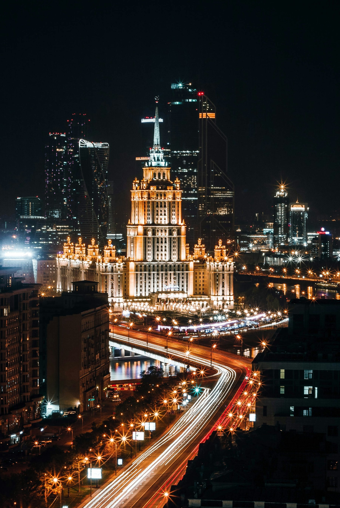
  <div class="wrap">
    <p class="eyebrow">Конкуренты</p>
    <h1>13 итальянских соседей <em>в радиусе трёх точек</em></h1>
    <p class="sub">Пушкинская, Тверская, Маяковская, Кузнецкий Мост. Данные собраны 21 октября 2026 с Яндекс Карт, сайтов и Restoclub, 54 источника.</p>
  </div>
</section>

<section style="border-top:0">
  <div class="wrap">
    <div class="cards c4">
      <div class="card"><span class="k">Чек «Венеции» на Яндексе</span><span class="num tnum">500–1 500 ₽</span><p>У соседей 1 500–2 500 ₽. С такой вилкой гость ждёт кафе, а не ресторан.</p></div>
      <div class="card"><span class="k">Рейтинг соседей</span><span class="num tnum">4,8–5,0</span><p>Против 4,6 на Страстном. Рейтинг напрямую двигает позиции на картах.</p></div>
      <div class="card"><span class="k">Персонал в отзывах</span><span class="num bad tnum">63%</span><p>У большинства соседей 81–92%. Ниже только Pinzeria.</p></div>
      <div class="card"><span class="k">Бизнес-ланч в отзывах</span><span class="num bad tnum">48%</span><p>Последнее место среди всех, у кого эта тема есть.</p></div>
    </div>
  </div>
</section>

<section>
  <div class="wrap">
    <div class="head">
      <p class="eyebrow">Карта рынка</p>
      <h2>Где все и где свободно</h2>
      <p class="sub">Чек по Яндексу по горизонтали, формат по вертикали. Плотнее всего в зоне 1 500–2 500 ₽. Ниша «траттория с характером места» пуста.</p>
    </div>
    <div class="map">
      <svg viewBox="0 0 900 560" role="img" aria-label="Карта позиционирования: Венеция внизу слева среди дешёвых, свободная ниша в середине при чеке 1500–2200 рублей">
        <defs><marker id="ah" viewBox="0 0 10 10" refX="9" refY="5" markerWidth="8" markerHeight="8" orient="auto"><path d="M0 0L10 5L0 10z" fill="#a8873f"/></marker></defs>
        <line class="ax" x1="60" y1="530" x2="880" y2="530"/>
        <line class="ax" x1="60" y1="40" x2="60" y2="530"/>
        <g class="lbl">
          <text x="113" y="548" text-anchor="middle">500</text><text x="273" y="548" text-anchor="middle">1 000</text><text x="367" y="548" text-anchor="middle">1 500</text><text x="485" y="548" text-anchor="middle">2 500</text><text x="594" y="548" text-anchor="middle">4 000</text><text x="740" y="548" text-anchor="middle">8 000 ₽</text>
          <text x="66" y="62">Fine dining</text><text x="66" y="142">Авторский</text><text x="66" y="222">Модный концепт</text><text x="66" y="302">С итальянским лицом</text><text x="66" y="382">Семейная сеть</text><text x="66" y="462">Домашняя · стритфуд</text>
        </g>
        <g stroke="var(--line)" stroke-width="1" stroke-dasharray="2 6"><line x1="60" y1="120" x2="880" y2="120"/><line x1="60" y1="200" x2="880" y2="200"/><line x1="60" y1="280" x2="880" y2="280"/><line x1="60" y1="360" x2="880" y2="360"/><line x1="60" y1="440" x2="880" y2="440"/></g>
        <rect class="zone" x="330" y="262" width="150" height="104" rx="2"/>
        <text class="zt" x="405" y="252" text-anchor="middle">Свободно: 1 500–2 200 ₽</text>
        <path class="ar" d="M200 455 C 260 440, 300 380, 335 340"/>
        <g class="pt">
          <circle cx="829" cy="80" r="5"/><text class="pn" x="818" y="100" text-anchor="end">Cantinetta Antinori</text>
          <circle cx="740" cy="90" r="5"/><text class="pn" x="740" y="74" text-anchor="middle">Semifreddo</text>
          <circle cx="594" cy="96" r="5"/><text class="pn" x="594" y="80" text-anchor="middle">Unica</text>
          <circle cx="594" cy="160" r="5"/><text class="pn" x="594" y="180" text-anchor="middle">Probka</text>
          <circle cx="611" cy="140" r="5"/><text class="pn" x="620" y="136">Il Forno</text>
          <circle cx="688" cy="170" r="5"/><text class="pn" x="698" y="175">Salone</text>
          <circle cx="367" cy="230" r="5"/><text class="pn" x="367" y="217" text-anchor="middle">Pasta Queen</text>
          <circle cx="485" cy="240" r="5"/><text class="pn" x="495" y="245">Dante</text>
          <circle cx="434" cy="215" r="5"/><text class="pn" x="444" y="210">Мама будет рада</text>
          <circle cx="367" cy="320" r="5"/><text class="pn" x="357" y="325" text-anchor="end">Позитано</text>
          <circle cx="367" cy="296" r="5"/><text class="pn" x="357" y="300" text-anchor="end">Вилла Паста</text>
          <circle cx="367" cy="400" r="5"/><text class="pn" x="367" y="420" text-anchor="middle">Il Pizzaiolo</text>
          <circle cx="409" cy="385" r="5"/><text class="pn" x="419" y="380">Osteria Mario</text>
          <circle cx="400" cy="410" r="5"/><text class="pn" x="410" y="422">iL Патио</text>
          <circle cx="170" cy="500" r="5"/><text class="pn" x="170" y="518" text-anchor="middle">Fontana</text>
          <circle cx="113" cy="488" r="5"/><text class="pn" x="113" y="476" text-anchor="middle">Pinzeria</text>
        </g>
        <circle class="me" cx="190" cy="455" r="8"/>
        <text class="mn" x="204" y="460">Венеция сейчас</text>
      </svg>
    </div>
    <p class="hint">Положение по формату: оценка аналитика по меню, описаниям и чеку. Чек: Яндекс Карты, нижняя граница вилки.</p>
  </div>
</section>

<section>
  <div class="wrap">
    <div class="head">
      <p class="eyebrow">Сводная таблица</p>
      <h2>Что есть у соседей и чего нет у «Венеции»</h2>
    </div>
    <div class="scroller" tabindex="0" aria-label="Таблица сравнения, листается вбок">
      <table class="cmp">
        <thead><tr><th>Ресторан</th><th>Чек, ₽</th><th>Яндекс</th><th>Бронь онлайн</th><th>Доставка</th><th>Цены и фото</th><th>Банкеты</th><th>Обед</th><th>EN</th><th>Соцсети</th></tr></thead>
        <tbody>
          <tr class="me"><th>Траттория Венеция<small>3 точки</small></th><td>500–1 500</td><td class="tnum">4,6–4,8 · 8 075</td><td><span class="pill n">нет</span></td><td><span class="pill n">ссылка мёртвая</span></td><td><span class="pill n">нет</span></td><td><span class="pill q">не описаны</span></td><td>−20% 11–16</td><td><span class="pill n">нет</span></td><td><span class="pill n">нет</span></td></tr>
          <tr><th>Вилла Паста<small>Б. Дмитровка</small></th><td>1 500–2 000</td><td class="tnum">4,7 · 4 757</td><td><span class="pill y">да</span></td><td><span class="pill y">Яндекс Еда</span></td><td><span class="pill q">частично</span></td><td><span class="pill y">да</span></td><td>нет</td><td><span class="pill n">нет</span></td><td><span class="pill y">Telegram</span></td></tr>
          <tr><th>Il Pizzaiolo<small>Тверская</small></th><td>1 500–2 500</td><td class="tnum">4,8 · 1 125</td><td><span class="pill y">да</span></td><td><span class="pill y">да</span></td><td><span class="pill q">PDF</span></td><td><span class="pill q">?</span></td><td>850 ₽</td><td><span class="pill y">да</span></td><td><span class="pill q">?</span></td></tr>
          <tr><th>Позитано<small>Садовая-Триумфальная</small></th><td>от 1 500</td><td class="tnum">4,7 · 966</td><td><span class="pill y">да</span></td><td><span class="pill y">Яндекс</span></td><td><span class="pill n">нет</span></td><td><span class="pill y">да</span></td><td>−20% 12–16</td><td><span class="pill n">нет</span></td><td><span class="pill y">VK, Telegram</span></td></tr>
          <tr><th>iL Патио<small>1-я Тверская-Ямская</small></th><td>от 2 500</td><td class="tnum">4,5 · 3 681</td><td><span class="pill y">да</span></td><td><span class="pill y">своя</span></td><td><span class="pill y">да</span></td><td><span class="pill y">да</span></td><td>от 540 ₽</td><td><span class="pill n">нет</span></td><td><span class="pill y">Telegram, VK</span></td></tr>
          <tr><th>Fontana<small>Тверская, стритфуд</small></th><td>600–1 000</td><td class="tnum">5,0 · 695</td><td><span class="pill n">нет</span></td><td><span class="pill y">Яндекс</span></td><td><span class="pill n">нет</span></td><td><span class="pill n">нет</span></td><td>нет</td><td><span class="pill n">нет</span></td><td><span class="pill n">нет</span></td></tr>
          <tr><th>Osteria Mario<small>ЦДМ</small></th><td>1 800</td><td class="tnum">4,6 · 2 324</td><td><span class="pill y">WhatsApp</span></td><td><span class="pill y">да</span></td><td><span class="pill q">?</span></td><td><span class="pill q">частично</span></td><td>есть</td><td><span class="pill q">?</span></td><td><span class="pill y">Telegram, VK</span></td></tr>
          <tr><th>Pasta Queen<small>Кузнецкий Мост</small></th><td>1 500–2 500</td><td class="tnum">4,9 · 3 042</td><td><span class="pill y">Airesto</span></td><td><span class="pill n">нет</span></td><td><span class="pill n">нет</span></td><td><span class="pill n">нет</span></td><td>12–16</td><td><span class="pill n">нет</span></td><td><span class="pill y">Telegram-бот</span></td></tr>
          <tr><th>Salone pasta&amp;bar<small>Малая Дмитровка</small></th><td>6 000</td><td class="tnum">5,0 · 2 710</td><td><span class="pill y">виджет</span></td><td><span class="pill n">нет</span></td><td><span class="pill q">?</span></td><td><span class="pill y">да</span></td><td>нет</td><td><span class="pill n">нет</span></td><td><span class="pill q">частично</span></td></tr>
          <tr><th>Dante<small>Кузнецкий Мост</small></th><td>от 2 500</td><td class="tnum">4,8 · 3 106</td><td><span class="pill y">Яндекс</span></td><td><span class="pill y">Яндекс</span></td><td><span class="pill q">частично</span></td><td><span class="pill n">нет</span></td><td>−40% на 2 блюда</td><td><span class="pill y">да</span></td><td><span class="pill y">Telegram</span></td></tr>
          <tr><th>Probka<small>Цветной бульвар</small></th><td>4 000</td><td class="tnum">4,9 · 6 066</td><td><span class="pill y">да</span></td><td><span class="pill y">да</span></td><td><span class="pill q">?</span></td><td><span class="pill q">?</span></td><td>нет</td><td><span class="pill y">да</span></td><td><span class="pill y">VK</span></td></tr>
          <tr><th>Pinzeria by Bontempi<small>Рождественский</small></th><td>500–1 000</td><td class="tnum">4,4 · 363</td><td><span class="pill n">нет</span></td><td><span class="pill y">своя</span></td><td><span class="pill y">да</span></td><td><span class="pill q">фуршет</span></td><td>нет</td><td><span class="pill n">нет</span></td><td><span class="pill n">нет</span></td></tr>
          <tr><th>Мама будет рада<small>Пушкинская пл.</small></th><td>2 000–2 500</td><td class="tnum">4,8 · 4 237</td><td><span class="pill n">нет</span></td><td><span class="pill y">приложение</span></td><td><span class="pill q">частично</span></td><td><span class="pill n">нет</span></td><td>1 150 ₽</td><td><span class="pill n">нет</span></td><td><span class="pill n">нет</span></td></tr>
          <tr><th>Il Forno<small>Неглинная</small></th><td>4 300</td><td class="tnum">4,8 · 2 210</td><td><span class="pill q">?</span></td><td><span class="pill q">?</span></td><td><span class="pill n">сайт пустой</span></td><td><span class="pill q">?</span></td><td>?</td><td><span class="pill q">?</span></td><td><span class="pill q">?</span></td></tr>
        </tbody>
      </table>
    </div>
    <p class="hint">Чек: Яндекс Карты. «?» означает, что данных на сайте и в карточках нет. Полные карточки конкурентов с цитатами отзывов в research/04-конкуренты.md.</p>
    <div class="cards c4" style="margin-top:32px">
      <div class="card"><span class="k">Бронь онлайн</span><span class="num tnum">9 из 12</span><p>соседей принимают бронь на сайте или в Яндексе. «Венеция» нет.</p></div>
      <div class="card"><span class="k">Цены в Яндексе</span><span class="num tnum">11 из 12</span><p>соседей показывают меню с ценами в карточке. «Венеция» не попадает в выдачу по блюдам.</p></div>
      <div class="card"><span class="k">Соцсети</span><span class="num tnum">9 из 12</span><p>соседей ведут Telegram или VK. «Венеция» нет.</p></div>
      <div class="card"><span class="k">Обед с ценой</span><span class="num tnum">5 из 12</span><p>соседей называют цену обеда. «Венеция» единственная, у кого обед есть, а цены на сайте нет.</p></div>
    </div>
  </div>
</section>

<section>
  <div class="wrap two">
    <div>
      <div class="head" style="margin-bottom:28px">
        <p class="eyebrow">Цены</p>
        <h2>Пицца дешевле всех. Паста <span class="it">нет</span>.</h2>
      </div>
      <h4 style="margin-bottom:14px">Маргарита</h4>
      <div class="chart" role="img" aria-label="Цена Маргариты: iL Патио 630, Венеция 650, Il Pizzaiolo 690, Вилла Паста 850, Osteria Mario 870, Probka 1200 рублей">
        <div class="row"><span class="lb">iL Патио</span><div class="track"><span class="fill" style="width:52%"></span></div><span class="val tnum">630</span></div>
        <div class="row me"><span class="lb">Венеция</span><div class="track"><span class="fill" style="width:54%"></span></div><span class="val tnum">650</span></div>
        <div class="row"><span class="lb">Il Pizzaiolo</span><div class="track"><span class="fill" style="width:57%"></span></div><span class="val tnum">690</span></div>
        <div class="row"><span class="lb">Вилла Паста</span><div class="track"><span class="fill" style="width:71%"></span></div><span class="val tnum">850</span></div>
        <div class="row"><span class="lb">Osteria Mario</span><div class="track"><span class="fill" style="width:72%"></span></div><span class="val tnum">870</span></div>
        <div class="row"><span class="lb">Probka</span><div class="track"><span class="fill" style="width:100%"></span></div><span class="val tnum">1 200</span></div>
      </div>
      <h4 style="margin-block:32px 14px">Карбонара</h4>
      <div class="chart" role="img" aria-label="Цена карбонары: Il Pizzaiolo 760, Вилла Паста 850, Pasta Queen 850, Венеция 890, Позитано 936, Osteria Mario 1010 рублей">
        <div class="row"><span class="lb">Il Pizzaiolo</span><div class="track"><span class="fill" style="width:75%"></span></div><span class="val tnum">760</span></div>
        <div class="row"><span class="lb">Вилла Паста</span><div class="track"><span class="fill" style="width:84%"></span></div><span class="val tnum">850</span></div>
        <div class="row"><span class="lb">Pasta Queen</span><div class="track"><span class="fill" style="width:84%"></span></div><span class="val tnum">850</span></div>
        <div class="row me"><span class="lb">Венеция</span><div class="track"><span class="fill" style="width:88%"></span></div><span class="val tnum">890</span></div>
        <div class="row"><span class="lb">Позитано</span><div class="track"><span class="fill" style="width:93%"></span></div><span class="val tnum">936</span></div>
        <div class="row"><span class="lb">Osteria Mario</span><div class="track"><span class="fill" style="width:100%"></span></div><span class="val tnum">1 010</span></div>
      </div>
      <p class="note" style="margin-top:14px">Меню на Яндекс Картах и сайтах, октябрь 2026. Маргарита на 24% дешевле медианы соседей. Карбонара на 5% дороже медианы: нужна «паста дня» до 700 ₽.</p>
    </div>
    <div>
      <div class="head" style="margin-bottom:28px">
        <p class="eyebrow">Обед</p>
        <h2>Скидкой не выиграть. <span class="it">Понятностью</span> можно.</h2>
      </div>
      <div class="chart" role="img" aria-label="Цена обеда: iL Патио 540, Венеция 690 только в 2ГИС, Il Pizzaiolo 850, Мама будет рада 1150 рублей">
        <div class="row"><span class="lb">iL Патио</span><div class="track"><span class="fill" style="width:47%"></span></div><span class="val tnum">540</span></div>
        <div class="row me"><span class="lb">Венеция</span><div class="track"><span class="fill" style="width:60%"></span></div><span class="val tnum">690</span></div>
        <div class="row"><span class="lb">Il Pizzaiolo</span><div class="track"><span class="fill" style="width:74%"></span></div><span class="val tnum">850</span></div>
        <div class="row"><span class="lb">Мама будет рада</span><div class="track"><span class="fill" style="width:100%"></span></div><span class="val tnum">1 150</span></div>
      </div>
      <p class="note" style="margin-top:14px">Цена «Венеции» 690 ₽ есть только в 2ГИС. На сайте только «−20% с 11 до 16». Ту же скидку даёт Позитано, Dante даёт −40% на два блюда.</p>
      <div class="cards" style="grid-template-columns:1fr;margin-top:28px">
        <div class="card img pick"><div class="in"><span class="k">Предложение</span><b class="t">Обед траттории: суп дня, паста или пицца, морс. 690–790 ₽, будни 12–16</b><p>Цена между iL Патио и Il Pizzaiolo. Скидку 20% оставить на остальное меню. Одна формулировка на сайте, в Яндексе, 2ГИС и на столах.</p></div></div>
      </div>
    </div>
  </div>
</section>

<section class="band">
  <div class="wrap">
    <div class="head">
      <p class="eyebrow">Чего не делает никто</p>
      <h2>Семь ходов, которых нет у соседей</h2>
    </div>
    <div class="plat" style="margin-top:0">
      <div><span class="k">01</span><span class="v">Забрать слово «траттория» в центре</span><span class="d">Запрос держит Vabene, хотя все её точки вне центра. В радиусе тратторией не называется никто</span></div>
      <div><span class="k">02</span><span class="v">Три точки с разным характером</span><span class="d">Il Pizzaiolo, iL Патио и Osteria Mario показывают одинаковые залы. Схема Padella: три плитки на первом экране</span></div>
      <div><span class="k">03</span><span class="v">Дровяная печь как продукт</span><span class="d">По запросу «пицца на дровах» в центре Яндекс выдаёт подмосковную сеть. Поле пустое</span></div>
    </div>
    <div class="plat" style="margin-top:1px;border-top:0">
      <div><span class="k">04</span><span class="v">Венето в меню</span><span class="d">Fontana продаёт Рим, Вилла Паста Тоскану, Позитано Неаполь. Венецию не продаёт никто</span></div>
      <div><span class="k">05</span><span class="v">Цифра доверия на первом экране</span><span class="d">«15 лет, 8 000 оценок». Больше оценок в радиусе только у Probka и Виллы Пасты, но цифрой никто не пользуется</span></div>
      <div><span class="k">06</span><span class="v">Торжества правилами, а не «звоните»</span><span class="d">Вместимость, депозит, свой торт, пробковый сбор. Понятно описано только у iL Патио и Позитано</span></div>
    </div>
    <div class="plat" style="margin-top:1px;border-top:0;grid-template-columns:1fr">
      <div><span class="k">07</span><span class="v">Итальянские вечера по дням недели</span><span class="d">У Позитано работает календарь: суббота вино, воскресенье пицца. Вариант: вторник аперитив, четверг камин, воскресенье семейная пицца. Это продаёт будни</span></div>
    </div>
  </div>
</section>

<section>
  <div class="wrap">
    <div class="head">
      <p class="eyebrow">Эталоны</p>
      <h2>Чему учиться у лучших</h2>
    </div>
    <div class="refs">
      <div class="ref"><span class="w">Лондон</span><b>Padella</b><p>Три точки как три плитки на первом экране, выбор по фото.</p></div>
      <div class="ref"><span class="w">Нью-Йорк</span><b>Via Carota</b><p>Подзаголовок через сценарии дня: обед, аперитив, ужин.</p></div>
      <div class="ref"><span class="w">Лондон</span><b>Gloria, Big Mamma</b><p>Блюда-герои с фото и правила брони одним блоком.</p></div>
      <div class="ref"><span class="w">Бурано</span><b>Trattoria da Romano</b><p>Год основания на первом экране, одно фирменное блюдо.</p></div>
      <div class="ref"><span class="w">Екатеринбург</span><b>Итальянцы</b><p>Рейтинг 5,0 при 8 137 оценках и том же чеке. Банкеты описаны правилами.</p></div>
      <div class="ref"><span class="w">Казань</span><b>Olio</b><p>«130 000+ гостей» на первом экране, бронь через Telegram-бота.</p></div>
    </div>
  </div>
</section>

</div>

<!-- ============ МИР ============ -->
<div class="panel" id="world" role="tabpanel" aria-labelledby="tab-world" hidden>

<section class="cover short">
  
  <div class="wrap">
    <p class="eyebrow">США и Европа</p>
    <h1>32 итальянских ресторана, <em>у которых стоит учиться</em></h1>
    <p class="sub">США, Италия и 15 городов Европы от Лиссабона до Осло, плюс Ереван и Дубай. Сайты, бронь, меню и соцсети проверены 21 октября 2026.</p>
  </div>
</section>

<section style="border-top:0">
  <div class="wrap">
    <div class="cards c4">
      <div class="card"><span class="k">Одно культовое блюдо</span><span class="num">15 из 15</span><p>У каждого сильного проекта есть блюдо, за которым идут. У «Венеции» такого блюда пока нет.</p></div>
      <div class="card"><span class="k">Цены на сайте</span><span class="num">5 из 5</span><p>Все демократичные эталоны показывают цены открыто. Скрывают только дорогие.</p></div>
      <div class="card"><span class="k">Точка = характер</span><span class="num">4 сети</span><p>Big Mamma, Roscioli, Padella, Flour + Water. Та же модель, что Cantina / Cortile / Forno.</p></div>
      <div class="card"><span class="k">В цене «Венеции»</span><span class="num">5 из 15</span><p>Padella, бакари Венеции, Da Michele, Mario, Da Enzo. Американцы дороже в 3–5 раз: берём упаковку, не экономику.</p></div>
    </div>
  </div>
</section>

<section>
  <div class="wrap">
    <div class="head">
      <p class="eyebrow">Как выглядят их сайты</p>
      <h2>Первый экран эталонов</h2>
      <p class="sub">Ни одного абзаца про «уютную атмосферу». Еда, люди, место и одна кнопка.</p>
    </div>
    <div class="cards">
      <div class="card img">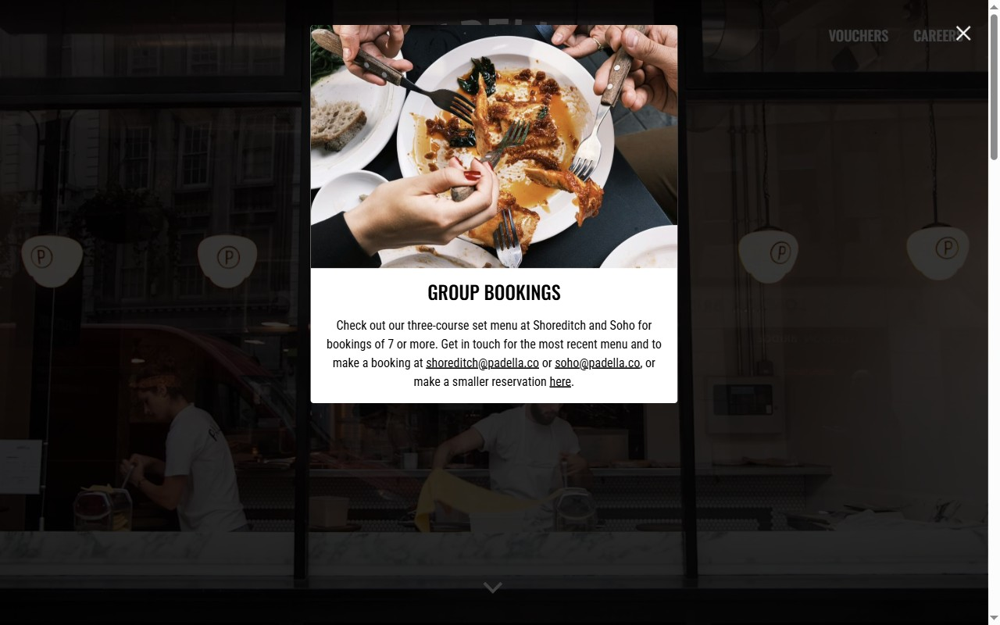<div class="in"><span class="k">Лондон · паста-бар</span><b class="t">Padella</b><p>Пастары через витрину на первом экране. Меню с сегодняшней датой и ценой каждой позиции. Очередь через QR.</p></div></div>
      <div class="card img">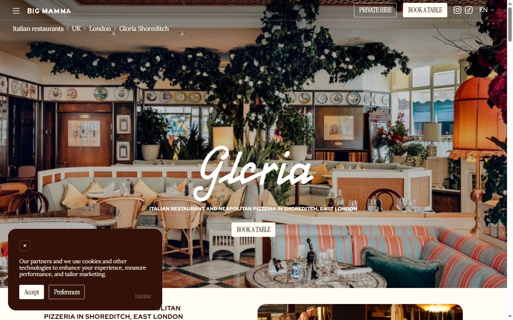<div class="in"><span class="k">Лондон · Big Mamma</span><b class="t">Gloria</b><p>Интерьер на весь экран, блюда-герои с фото, правила брони цифрами: за 30 дней в 9:00.</p></div></div>
      <div class="card img">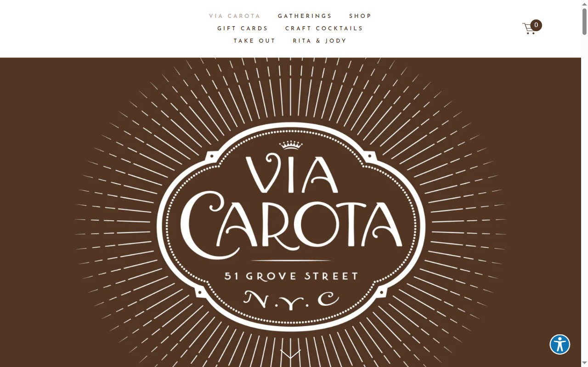<div class="in"><span class="k">Нью-Йорк · остерия</span><b class="t">Via Carota</b><p>Текст через сценарии дня. «Walk-ins always welcome». Магазин: книга $50, масло $55.</p></div></div>
      <div class="card img">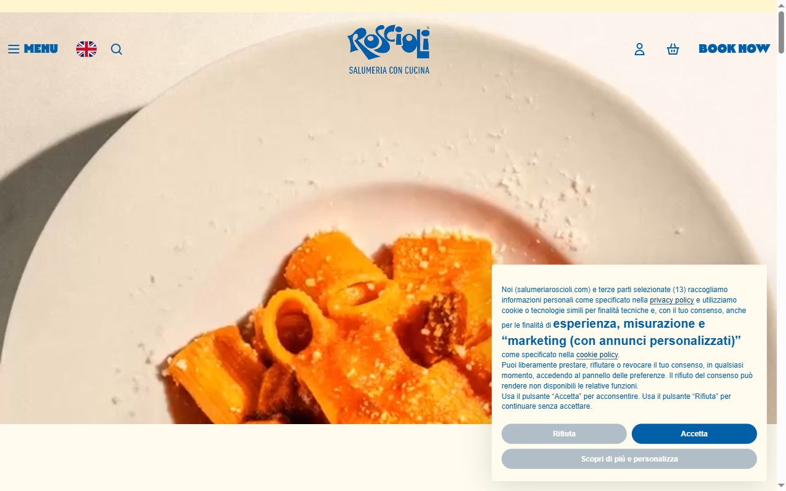<div class="in"><span class="k">Рим · семейная сеть</span><b class="t">Roscioli</b><p>Бронь с выбором зоны: погреб, комната, бар. Наборы «паста + соус» домой за €30–35.</p></div></div>
      <div class="card img">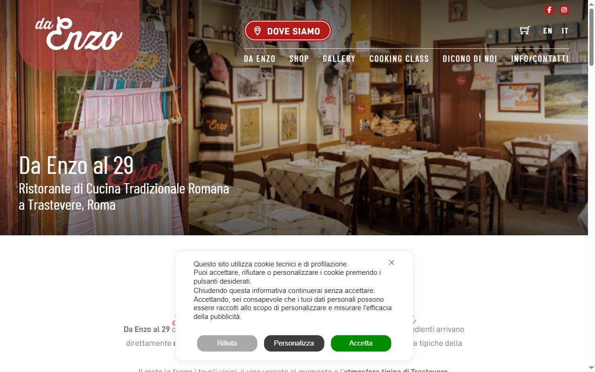<div class="in"><span class="k">Рим · траттория</span><b class="t">Da Enzo al 29</b><p>Зал и фирменные фартуки на первом экране. Кулинарный класс и ролики «50 секунд» про одно блюдо.</p></div></div>
      <div class="card img"><div class="in"><span class="k">Венеция · бакаро</span><b class="t">All'Arco, Do Mori</b><p>Чикетти по €2,50 и бокал у стойки. Do Mori работает с 1462 года. Формат для «венецианского часа».</p></div></div>
    </div>
  </div>
</section>

<section>
  <div class="wrap">
    <div class="head">
      <p class="eyebrow">Сводная таблица</p>
      <h2>15 эталонов в одной таблице</h2>
    </div>
    <div class="scroller" tabindex="0" aria-label="Таблица эталонов, листается вбок">
      <table class="cmp">
        <thead><tr><th>Проект</th><th>Город</th><th>Чек, ₽</th><th>Бронь</th><th>Цены онлайн</th><th>Фото еды</th><th>Точки с характером</th><th>Instagram</th><th>Главная фишка</th></tr></thead>
        <tbody>
          <tr class="me"><th>Траттория Венеция<small>для сравнения</small></th><td>Москва</td><td>1 500–2 200</td><td><span class="pill n">нет</span></td><td><span class="pill n">нет</span></td><td><span class="pill n">нет</span></td><td><span class="pill q">идея</span></td><td>нет</td><td>камин, двор, печь</td></tr>
          <tr><th>Padella + Trullo<small>паста-бар</small></th><td>Лондон</td><td>2 200–3 900</td><td><span class="pill y">QR-очередь</span></td><td><span class="pill y">да, с датой</span></td><td><span class="pill q">производство</span></td><td><span class="pill y">быстро / долго</span></td><td>148K</td><td>паста £13,5, Bib Gourmand</td></tr>
          <tr><th>Big Mamma<small>34+ ресторана</small></th><td>Париж, Лондон</td><td>1 880 ланч · 6 300+</td><td><span class="pill y">SevenRooms</span></td><td><span class="pill y">да</span></td><td><span class="pill y">да</span></td><td><span class="pill y">имя, интерьер, IG</span></td><td>440K</td><td>точка = сцена</td></tr>
          <tr><th>Roscioli<small>семейная сеть</small></th><td>Рим</td><td>4 700–7 500</td><td><span class="pill y">слот + зона</span></td><td><span class="pill y">PDF</span></td><td><span class="pill y">да</span></td><td><span class="pill y">функции</span></td><td>135K</td><td>карбонара, наборы домой</td></tr>
          <tr><th>Da Enzo al 29<small>траттория</small></th><td>Рим</td><td>2 800–4 200</td><td><span class="pill q">живая очередь</span></td><td><span class="pill n">нет</span></td><td><span class="pill q">зал</span></td><td><span class="pill n">одна</span></td><td>89K</td><td>карбонара, класс</td></tr>
          <tr><th>Trattoria Mario<small>с 1953</small></th><td>Флоренция</td><td>2 300–3 700</td><td><span class="pill q">без брони</span></td><td><span class="pill n">нет</span></td><td><span class="pill q">?</span></td><td><span class="pill n">одна</span></td><td>21K</td><td>блюда дня по будням</td></tr>
          <tr><th>Da Michele<small>с 1870, ~70 точек</small></th><td>Неаполь</td><td>750–1 100</td><td><span class="pill q">номерок</span></td><td><span class="pill n">нет</span></td><td><span class="pill q">?</span></td><td><span class="pill n">одинаковые</span></td><td>237K</td><td>4 пиццы</td></tr>
          <tr><th>All'Arco, Do Mori<small>бакари</small></th><td>Венеция</td><td>930–1 860</td><td><span class="pill q">стойка</span></td><td><span class="pill n">сайта нет</span></td><td><span class="pill n">—</span></td><td><span class="pill n">одна</span></td><td>18K</td><td>чикетти у стойки</td></tr>
          <tr><th>Da Romano<small>с 1920</small></th><td>Бурано</td><td>?</td><td><span class="pill y">форма</span></td><td><span class="pill n">нет</span></td><td><span class="pill q">?</span></td><td><span class="pill n">одна</span></td><td>?</td><td>risotto di gò</td></tr>
          <tr><th>Via Carota<small>остерия</small></th><td>Нью-Йорк</td><td>5 800–9 100</td><td><span class="pill y">Resy + walk-in</span></td><td><span class="pill y">да</span></td><td><span class="pill n">эмблема</span></td><td><span class="pill n">одна</span></td><td>144K</td><td>cacio e pepe, магазин</td></tr>
          <tr><th>Lilia<small>ресторан</small></th><td>Нью-Йорк</td><td>?</td><td><span class="pill y">Resy</span></td><td><span class="pill n">нет</span></td><td><span class="pill y">слайдер</span></td><td><span class="pill y">+ лавка пасты</span></td><td>159K</td><td>агнолотти</td></tr>
          <tr><th>Don Angie<small>ресторан</small></th><td>Нью-Йорк</td><td>7 500–10 800</td><td><span class="pill y">OpenTable</span></td><td><span class="pill y">да</span></td><td><span class="pill y">слайдер</span></td><td><span class="pill n">одна</span></td><td>159K</td><td>лазанья на двоих</td></tr>
          <tr><th>Rubirosa<small>пиццерия</small></th><td>Нью-Йорк</td><td>3 300–5 000</td><td><span class="pill y">форма</span></td><td><span class="pill n">нет</span></td><td><span class="pill y">да</span></td><td><span class="pill q">+ летняя</span></td><td>106K</td><td>Tie-Dye пицца</td></tr>
          <tr><th>Felix<small>траттория</small></th><td>Лос-Анджелес</td><td>7 500–10 800</td><td><span class="pill y">своя, 15 мин</span></td><td><span class="pill q">?</span></td><td><span class="pill q">?</span></td><td><span class="pill n">одна</span></td><td>114K</td><td>паста за стеклом</td></tr>
          <tr><th>Bestia<small>ресторан</small></th><td>Лос-Анджелес</td><td>2 600–4 100</td><td><span class="pill y">OpenTable</span></td><td><span class="pill n">нет</span></td><td><span class="pill y">да</span></td><td><span class="pill n">одна</span></td><td>104K</td><td>салюми, печь</td></tr>
          <tr><th>Flour + Water<small>группа</small></th><td>Сан-Франциско</td><td>11 200 сет</td><td><span class="pill y">Resy + walk-in</span></td><td><span class="pill q">PDF с датой</span></td><td><span class="pill q">?</span></td><td><span class="pill y">7 форматов</span></td><td>81K</td><td>меню каждый день</td></tr>
        </tbody>
      </table>
    </div>
    <p class="hint">Чек в рублях: оценка по ценам блюд, курс ЦБ на 20.10.2026. «?» — данных нет. Полные карточки с источниками в research/05-конкуренты-мир.md.</p>
  </div>
</section>

<section class="band">
  <div class="wrap">
    <div class="head">
      <p class="eyebrow">Европа за пределами Италии</p>
      <h2>Итальянцы, которые продают Италию <em>местной публике</em></h2>
      <p class="sub">Самый близкий к «Венеции» случай: чужая страна, местный гость, Италия как обещание. 17 проектов, по одному на город.</p>
    </div>
    <div class="cards c4" style="background:color-mix(in srgb,var(--on-lagoon) 18%,transparent);border-color:color-mix(in srgb,var(--on-lagoon) 18%,transparent)">
      <div class="card pick"><span class="k">Онлайн-бронь</span><span class="num" style="color:var(--on-lagoon)">16 из 17</span><p>с правилами в цифрах. «Венеция» — нет.</p></div>
      <div class="card pick"><span class="k">История вокруг печи</span><span class="num" style="color:var(--on-lagoon)">9 из 17</span><p>500°, 60 секунд, тесто 36 часов. Готовый ход для Forno.</p></div>
      <div class="card pick"><span class="k">Сети с разными точками</span><span class="num" style="color:var(--on-lagoon)">10 из 17</span><p>«Квартал» ресторанов с разными ролями под одним именем.</p></div>
      <div class="card pick"><span class="k">Дешевле «Венеции»</span><span class="num" style="color:var(--on-lagoon)">0 из 17</span><p>Самые близкие по цене — 2 200–2 800 ₽. «Венеция» дешевле всех.</p></div>
    </div>
  </div>
</section>

<section>
  <div class="wrap">
    <div class="head">
      <p class="eyebrow">17 городов</p>
      <h2>Лучший итальянский проект в каждом городе</h2>
    </div>
    <div class="scroller" tabindex="0" aria-label="Таблица европейских проектов, листается вбок">
      <table class="cmp" style="min-width:860px">
        <thead><tr><th>Город</th><th>Проект</th><th>Чек, ₽</th><th>Главная фишка</th><th>Что берём</th></tr></thead>
        <tbody>
          <tr><th>Берлин</th><td>Standard Serious Pizza</td><td class="tnum">2 790–3 350</td><td>«500°, пицца за 60 секунд», сезонные пиццы с именами</td><td>Forno: печь в цифрах</td></tr>
          <tr><th>Мюнхен</th><td>L'Osteria · 200+ точек</td><td class="tnum">2 330–2 980</td><td>Пицца 45 см из двух половин</td><td>Пицца на компанию</td></tr>
          <tr><th>Вена</th><td>Barbaro Gastronomie</td><td class="tnum">2 790–3 720</td><td>Рестораны во дворах дворцов, книга и масло в меню</td><td>Cortile: двор как сцена</td></tr>
          <tr><th>Цюрих</th><td>Bindella · 40+ ресторанов</td><td class="tnum">4 520–5 530</td><td>Импортёр вина с 1909, у каждого концепта своё слово</td><td>Одно слово на точку</td></tr>
          <tr><th>Мадрид</th><td>Gruppo Pulcinella · 7</td><td class="tnum">2 610–3 160</td><td>Общая бронь с выбором ресторана, лояльность «La Famiglia»</td><td>Одна бронь на три точки</td></tr>
          <tr><th>Барселона</th><td>Bacaro · Bib Gourmand 2026</td><td class="tnum">2 980–3 260</td><td>Венецианская таверна: сардины in saor, бакала</td><td>Cantina: «Немного Венеции»</td></tr>
          <tr><th>Лиссабон</th><td>Tanka Sapkota · Forno d'Oro</td><td class="tnum">2 420–2 790</td><td>«Золотая печь», №49 в 50 Top Pizza World 2026</td><td>Forno: печь как имя</td></tr>
          <tr><th>Амстердам</th><td>Toscanini</td><td class="tnum">4 190–4 650</td><td>Ресторан, лавка и энотека на одной улице, 40 лет</td><td>Полка навынос</td></tr>
          <tr><th>Брюссель</th><td>Squadra Cocina · 5</td><td class="tnum">2 980–3 720</td><td>У каждой точки ритуал: детский клуб, обеденная пицца €14, сад</td><td>Ритуал на точку</td></tr>
          <tr><th>Копенгаген</th><td>mother</td><td class="tnum">3 240–3 860</td><td>В будний обед любая пицца за 100 крон</td><td>Обед с одной ценой</td></tr>
          <tr><th>Стокгольм</th><td>Urban Italian Group</td><td class="tnum">2 810–4 360</td><td>У каждого концепта своя эпоха, спритц кувшинами на крыше</td><td>Cortile: спритц летом</td></tr>
          <tr><th>Осло</th><td>Villa Paradiso · 7</td><td class="tnum">3 970–4 850</td><td>Печь и пиццайоло из Неаполя, «пицца недели»</td><td>Forno: пицца недели</td></tr>
          <tr><th>Варшава</th><td>Le Braci · Bib Gourmand 2026</td><td class="tnum">3 510–3 830</td><td>Открытый огонь и гриль, детский формат «Bambini»</td><td>Детское меню</td></tr>
          <tr><th>Прага</th><td>Ambiente · Pizza Nuova</td><td class="tnum">2 220–3 250</td><td>Нет мест — сайт предлагает соседний ресторан группы</td><td>Переадресация между точками</td></tr>
          <tr><th>Будапешт</th><td>Pomo D'oro · 5 форматов</td><td class="tnum">4 360–4 740</td><td>Паста в голове пармезана у стола</td><td>Cantina: жест подачи</td></tr>
          <tr><th>Ереван</th><td>MINA Yerevan</td><td class="tnum">3 550–3 780</td><td>Печь во дворе-саду, e-mail основателя для отзывов</td><td>Канал к управляющему</td></tr>
          <tr><th>Дубай</th><td>Il Borro Tuscan Bistro</td><td class="tnum">6 770–7 340</td><td>Масло и мёд поместья продаются прямо из меню</td><td>Сувенир к счёту</td></tr>
        </tbody>
      </table>
    </div>
    <p class="hint">Чек: оценка по ценам блюд, курс ЦБ на 21.10.2026. MINA работает и в Москве, на Малой Никитской: это прямой конкурент по аудитории. Полные карточки: research/06-конкуренты-европа.md.</p>
  </div>
</section>

<section class="band">
  <div class="wrap">
    <div class="head">
      <p class="eyebrow">Что общего у итальянцев вне Италии</p>
      <h2>Шесть выводов <em>для «Венеции»</em></h2>
    </div>
    <div class="plat" style="margin-top:0">
      <div><span class="k">01 · Квартал, а не ресторан</span><span class="v">Несколько точек с разными ролями под одним именем</span><span class="d">Pomo D'oro, Toscanini, Bindella, Squadra. Cantina / Cortile / Forno — норма для сегмента</span></div>
      <div><span class="k">02 · Слово и ритуал</span><span class="v">У каждой точки одно слово-характер и свой ритуал</span><span class="d">«Храм пиццы», «дух Амальфи», детский клуб, бранч, обеденная пицца</span></div>
      <div><span class="k">03 · Факты вместо «аутентично»</span><span class="v">Печь из Неаполя, год открытия, место в рейтинге</span><span class="d">«Венеции» есть чем: 15+ лет, 8 000 оценок, дровяная печь</span></div>
    </div>
    <div class="plat" style="margin-top:1px;border-top:0">
      <div><span class="k">04 · Печь в цифрах</span><span class="v">Градусы, секунды, часы теста</span><span class="d">9 из 17 строят историю вокруг печи. Для Forno это главный контент</span></div>
      <div><span class="k">05 · Вино и лавка</span><span class="v">Вторая выручка: полка навынос, масло, книга</span><span class="d">Начать с подарочного сертификата и полки в Cantina</span></div>
      <div><span class="k">06 · Бронь и входная цена</span><span class="v">Онлайн-бронь с правилами и низкая входная цена</span><span class="d">Пицца за 100 крон, Маргарита за €11,5. У «Венеции» Маргарита 650 ₽</span></div>
    </div>
  </div>
</section>

<section class="band">
  <div class="wrap">
    <div class="head">
      <p class="eyebrow">Что повторяется у лучших</p>
      <h2>Шесть правил, <em>которые работают везде</em></h2>
    </div>
    <div class="plat" style="margin-top:0">
      <div><span class="k">01 · Одно блюдо</span><span class="v">Гость идёт за блюдом, а не «в итальянский»</span><span class="d">Cacio e pepe в Via Carota, Tie-Dye в Rubirosa, лазанья на двоих в Don Angie</span></div>
      <div><span class="k">02 · Точка = характер</span><span class="v">Своё имя, интерьер и блюдо у каждого адреса</span><span class="d">Big Mamma, Roscioli, Padella и Trullo</span></div>
      <div><span class="k">03 · Бронь цифрами</span><span class="v">За сколько дней, сколько держим стол, что для компаний</span><span class="d">Gloria 30 дней, Felix 15 минут, Padella 10 минут</span></div>
    </div>
    <div class="plat" style="margin-top:1px;border-top:0">
      <div><span class="k">04 · Меню с датой</span><span class="v">«Меню на 21 октября» и цена у каждой позиции</span><span class="d">Padella, Trullo, Flour + Water. Mario: блюда дня по будням</span></div>
      <div><span class="k">05 · Производство на виду</span><span class="v">Печь и руки повара на первом экране</span><span class="d">Felix, Padella, Da Michele. Это главный ход для Forno</span></div>
      <div><span class="k">06 · Год основания</span><span class="v">«Dal 1920», «dal 1953», «dal 1870»</span><span class="d">«Венеции» есть что сказать: 15+ лет и 8 000 оценок</span></div>
    </div>
  </div>
</section>

<section>
  <div class="wrap">
    <div class="head">
      <p class="eyebrow">Что берём в «Венецию»</p>
      <h2>Десять решений по приоритету</h2>
    </div>
    <div class="scroller" tabindex="0" aria-label="Таблица решений">
      <table class="cmp" style="min-width:760px">
        <thead><tr><th>Решение</th><th>Образец</th><th>Где</th><th>Когда</th><th>Стоимость</th></tr></thead>
        <tbody>
          <tr><th>Меню с ценами, весом и датой</th><td>Padella, Via Carota</td><td>все три</td><td><span class="pill y">1–2 мес</span></td><td>низкая</td></tr>
          <tr><th>Правила брони + 20–30% мест без брони</th><td>Gloria, Felix, Lilia</td><td>все, стойка у печи</td><td><span class="pill y">1–2 мес</span></td><td>низкая</td></tr>
          <tr><th>Бронь с выбором зоны: камин, двор, печь</th><td>Roscioli</td><td>все три</td><td><span class="pill y">1–2 мес</span></td><td>средняя</td></tr>
          <tr><th>Одно блюдо-имя на точку</th><td>Rubirosa, Da Romano</td><td>все три</td><td><span class="pill y">1–2 мес</span></td><td>низкая + фото</td></tr>
          <tr><th>Бизнес-ланч как расписание по будням</th><td>Trattoria Mario</td><td>все, акцент Forno</td><td><span class="pill y">1–2 мес</span></td><td>низкая</td></tr>
          <tr><th>Фотосессия трёх сцен</th><td>Gloria, Padella</td><td>все три</td><td><span class="pill y">1–2 мес</span></td><td>средняя</td></tr>
          <tr><th>«Венецианский час»: 3 чикетти + бокал, будни 17–19</th><td>All'Arco, Do Mori</td><td>Cantina, летом Cortile</td><td><span class="pill q">3–6 мес</span></td><td>низкая</td></tr>
          <tr><th>Telegram-канал с рубриками и лицом повара</th><td>Da Enzo, Big Mamma</td><td>сеть</td><td><span class="pill q">3–6 мес</span></td><td>низкая</td></tr>
          <tr><th>Сертификат → набор «паста + соус» → книга к юбилею</th><td>Via Carota, Roscioli</td><td>сеть</td><td><span class="pill q">3–6 мес</span></td><td>растёт по шагам</td></tr>
          <tr><th>Кулинарный класс в часы простоя</th><td>Da Enzo</td><td>Forno или Cantina</td><td><span class="pill q">позже</span></td><td>средняя</td></tr>
        </tbody>
      </table>
    </div>
    <p class="hint">Стоимость: низкая — силами команды, до ~50 тыс. ₽; средняя — подрядчик или съёмка, 50–300 тыс. ₽. Оценка аналитика.</p>
  </div>
</section>

<section>
  <div class="wrap">
    <div class="head">
      <p class="eyebrow">Что не переносим</p>
      <h2>Работает там, <span class="it">навредит</span> здесь</h2>
    </div>
    <div class="ba">
      <div class="was">
        <span class="k">Не брать</span>
        <ul>
          <li><svg viewBox="0 0 14 14" aria-hidden="true"><path d="M2 2L12 12M12 2L2 12" stroke="currentColor" stroke-width="1.5"/></svg>Многочасовую очередь вместо брони. При слабом сервисе это читается как плохой сервис</li>
          <li><svg viewBox="0 0 14 14" aria-hidden="true"><path d="M2 2L12 12M12 2L2 12" stroke="currentColor" stroke-width="1.5"/></svg>Дефицит брони «за 7 дней в 9:00». Гость просто уйдёт к соседу</li>
          <li><svg viewBox="0 0 14 14" aria-hidden="true"><path d="M2 2L12 12M12 2L2 12" stroke="currentColor" stroke-width="1.5"/></svg>Штраф за неявку для всех. Только для компаний от 8 и банкетов</li>
          <li><svg viewBox="0 0 14 14" aria-hidden="true"><path d="M2 2L12 12M12 2L2 12" stroke="currentColor" stroke-width="1.5"/></svg>Скрытые цены. Цена — главный аргумент «Венеции»</li>
          <li><svg viewBox="0 0 14 14" aria-hidden="true"><path d="M2 2L12 12M12 2L2 12" stroke="currentColor" stroke-width="1.5"/></svg>Instagram как основной канал. В России заблокирован</li>
          <li><svg viewBox="0 0 14 14" aria-hidden="true"><path d="M2 2L12 12M12 2L2 12" stroke="currentColor" stroke-width="1.5"/></svg>Франшизу одинаковых точек. Ценность в том, что точки разные</li>
        </ul>
      </div>
      <div class="will">
        <span class="k">Брать вместо этого</span>
        <ul>
          <li><svg viewBox="0 0 14 14" aria-hidden="true"><path d="M2 7L6 11L12 3" fill="none" stroke="#c7a35a" stroke-width="1.8"/></svg>Часть мест без брони и электронный лист ожидания на Cortile летом</li>
          <li><svg viewBox="0 0 14 14" aria-hidden="true"><path d="M2 7L6 11L12 3" fill="none" stroke="#c7a35a" stroke-width="1.8"/></svg>Бронь за 30 дней, стол держим 15 минут</li>
          <li><svg viewBox="0 0 14 14" aria-hidden="true"><path d="M2 7L6 11L12 3" fill="none" stroke="#c7a35a" stroke-width="1.8"/></svg>Депозит только для торжеств</li>
          <li><svg viewBox="0 0 14 14" aria-hidden="true"><path d="M2 7L6 11L12 3" fill="none" stroke="#c7a35a" stroke-width="1.8"/></svg>Цены и вес на сайте и в Яндексе</li>
          <li><svg viewBox="0 0 14 14" aria-hidden="true"><path d="M2 7L6 11L12 3" fill="none" stroke="#c7a35a" stroke-width="1.8"/></svg>Telegram, VK и карточки Яндекса</li>
          <li><svg viewBox="0 0 14 14" aria-hidden="true"><path d="M2 7L6 11L12 3" fill="none" stroke="#c7a35a" stroke-width="1.8"/></svg>Три точки, три сцены, одно имя</li>
        </ul>
      </div>
    </div>
  </div>
</section>

</div>

<!-- ============ РЕЗУЛЬТАТ ============ -->
<div class="panel" id="result" role="tabpanel" aria-labelledby="tab-result" hidden>

<section class="cover short">
  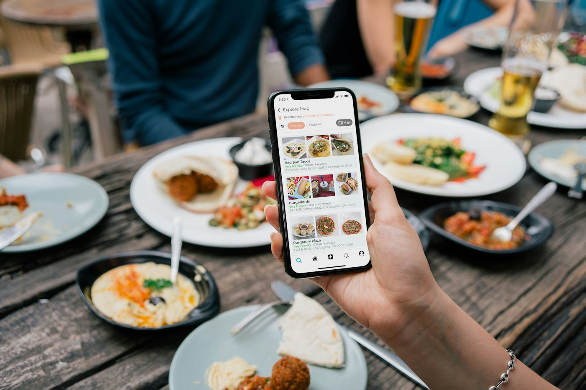
  <div class="wrap">
    <p class="eyebrow">Результат</p>
    <h1>Что получит гость <em>и что получит ресторан</em></h1>
    <p class="sub">Без обещаний в процентах выручки: их никто честно не посчитает. Каждое изменение закрывает конкретную дыру, через которую сейчас уходят гости.</p>
  </div>
</section>

<section style="border-top:0">
  <div class="wrap">
    <div class="head">
      <p class="eyebrow">Путь гостя</p>
      <h2>Было и будет</h2>
    </div>
    <div class="ba">
      <div class="was">
        <span class="k">Сейчас</span>
        <ul>
          <li><svg viewBox="0 0 14 14" aria-hidden="true"><path d="M2 2L12 12M12 2L2 12" stroke="currentColor" stroke-width="1.5"/></svg>Видит на карте «500–1 500 ₽», без фото и цен блюд</li>
          <li><svg viewBox="0 0 14 14" aria-hidden="true"><path d="M2 2L12 12M12 2L2 12" stroke="currentColor" stroke-width="1.5"/></svg>Открывает сайт и читает про каналы Венеции</li>
          <li><svg viewBox="0 0 14 14" aria-hidden="true"><path d="M2 2L12 12M12 2L2 12" stroke="currentColor" stroke-width="1.5"/></svg>Не может забронировать, звонит в шапку и попадает на Страстной</li>
          <li><svg viewBox="0 0 14 14" aria-hidden="true"><path d="M2 2L12 12M12 2L2 12" stroke="currentColor" stroke-width="1.5"/></svg>Не понимает, чем три адреса отличаются</li>
          <li><svg viewBox="0 0 14 14" aria-hidden="true"><path d="M2 2L12 12M12 2L2 12" stroke="currentColor" stroke-width="1.5"/></svg>Про обед знает три разные версии</li>
          <li><svg viewBox="0 0 14 14" aria-hidden="true"><path d="M2 2L12 12M12 2L2 12" stroke="currentColor" stroke-width="1.5"/></svg>Уходит к соседу с рейтингом 4,8</li>
        </ul>
      </div>
      <div class="will">
        <span class="k">После</span>
        <ul>
          <li><svg viewBox="0 0 14 14" aria-hidden="true"><path d="M2 7L6 11L12 3" fill="none" stroke="#c7a35a" stroke-width="1.8"/></svg>Видит меню с ценами и фото прямо в карточке Яндекса</li>
          <li><svg viewBox="0 0 14 14" aria-hidden="true"><path d="M2 7L6 11L12 3" fill="none" stroke="#c7a35a" stroke-width="1.8"/></svg>Выбирает вечер: cantina, cortile или forno</li>
          <li><svg viewBox="0 0 14 14" aria-hidden="true"><path d="M2 7L6 11L12 3" fill="none" stroke="#c7a35a" stroke-width="1.8"/></svg>Бронирует стол за минуту в боте или на сайте</li>
          <li><svg viewBox="0 0 14 14" aria-hidden="true"><path d="M2 7L6 11L12 3" fill="none" stroke="#c7a35a" stroke-width="1.8"/></svg>Знает цену обеда и что в него входит</li>
          <li><svg viewBox="0 0 14 14" aria-hidden="true"><path d="M2 7L6 11L12 3" fill="none" stroke="#c7a35a" stroke-width="1.8"/></svg>Находит правила торжеств без звонка</li>
          <li><svg viewBox="0 0 14 14" aria-hidden="true"><path d="M2 7L6 11L12 3" fill="none" stroke="#c7a35a" stroke-width="1.8"/></svg>Получает в Telegram повод прийти в будний вечер</li>
        </ul>
      </div>
    </div>
  </div>
</section>

<section>
  <div class="wrap">
    <div class="head">
      <p class="eyebrow">Для владельца</p>
      <h2>Шесть источников роста</h2>
      <p class="sub">Каждый привязан к тому, что соседи уже делают, а «Венеция» пока нет.</p>
    </div>
    <div class="cards">
      <div class="card img"><div class="in"><span class="k">Брони из карт</span><b class="t">Кнопка «Забронировать» в Яндексе и бот</b><p>Сейчас гость с карт упирается в сайт без брони. У 9 из 12 соседей бронь есть. Самый короткий путь к новым столам.</p></div></div>
      <div class="card img"><div class="in"><span class="k">Выдача по блюдам</span><b class="t">Меню с ценами в карточках</b><p>Запросы «паста Тверская», «пицца на дровах Маяковская» сейчас уходят соседям. С ценами в Яндексе сеть начинает в них участвовать.</p></div></div>
      <div class="card img">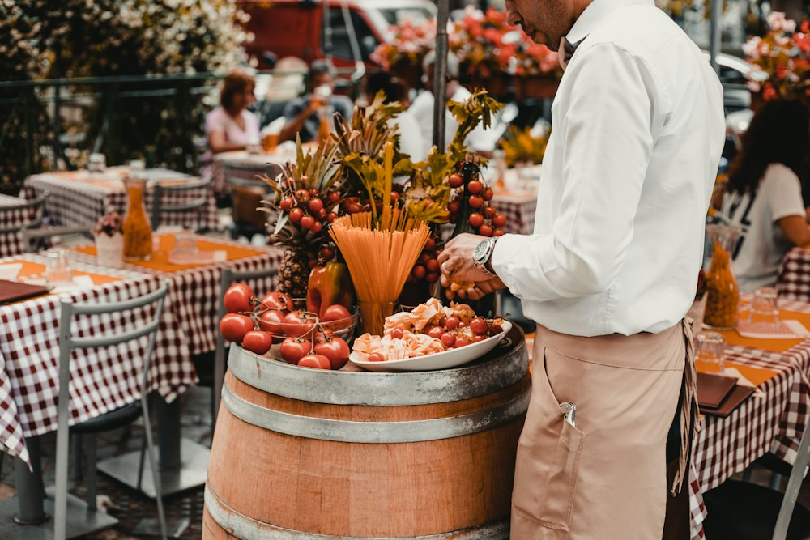<div class="in"><span class="k">Позиции на картах</span><b class="t">Рейтинг Страстного 4,6 → 4,8</b><p>Рейтинг двигает место в выдаче. Цель: персонал и ожидание в отзывах с 63% и 57% до уровня Маяковской, 80%+.</p></div></div>
      <div class="card img"><div class="in"><span class="k">Будни днём</span><b class="t">Обед с ценой вместо «−20%»</b><p>Тема «бизнес-ланч» сейчас 48%, худшая в радиусе. Понятный набор за 690–790 ₽ закрывает жалобы «обманули со скидкой».</p></div></div>
      <div class="card img"><div class="in"><span class="k">Будни вечером</span><b class="t">Итальянские вечера по дням</b><p>Аперитив во вторник, камин в четверг, семейная пицца в воскресенье. Позитано так заполняет будни.</p></div></div>
      <div class="card img">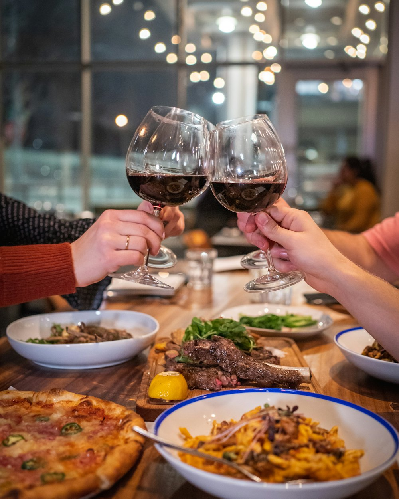<div class="in"><span class="k">Торжества</span><b class="t">Страница с правилами и ценами</b><p>Дни рождения и банкеты: 73–85% положительных тем в отзывах, но слов «банкет» и «день рождения» на сайте нет. Самый дорогой чек, который сейчас не продаётся.</p></div></div>
    </div>
  </div>
</section>

<section class="band">
  <div class="wrap">
    <div class="head">
      <p class="eyebrow">Цели на полгода</p>
      <h2>По чему мерить</h2>
      <p class="sub">Цифры «сейчас» проверены. Цифры «цель» это планка, а не прогноз.</p>
    </div>
    <div class="plat" style="margin-top:0">
      <div><span class="k">Рейтинг Страстного</span><span class="v">4,6 → 4,8</span><span class="d">Как у Маяковской и у соседей</span></div>
      <div><span class="k">Персонал в отзывах</span><span class="v">63% → 80%</span><span class="d">Уровень Маяковской сегодня</span></div>
      <div><span class="k">Бизнес-ланч в отзывах</span><span class="v">48% → 75%</span><span class="d">Dante держит 91%</span></div>
    </div>
    <div class="plat" style="margin-top:1px;border-top:0">
      <div><span class="k">Бронь онлайн</span><span class="v">0 → все три точки</span><span class="d">Яндекс, бот, сайт</span></div>
      <div><span class="k">Выдача по блюдам</span><span class="v">нет → топ-5</span><span class="d">«пицца на дровах Маяковская», «паста Тверская»</span></div>
      <div><span class="k">Чек в Яндексе</span><span class="v">500–1 500 → 1 500–2 000 ₽</span><span class="d">Честная вилка вместо кафе</span></div>
    </div>
  </div>
</section>

<section>
  <div class="wrap">
    <div class="head">
      <p class="eyebrow">Нужно от владельцев</p>
      <h2>Шесть ответов, чтобы начать</h2>
    </div>
    <div class="qs">
      <div class="q"><b>Какой обед официальный?</b><span>690 ₽ в 2ГИС, −20% на сайте, с 11 или с 12</span></div>
      <div class="q"><b>Кто шеф?</b><span>Restoclub называет Леонардо Гамбино, не подтверждено</span></div>
      <div class="q"><b>Есть ли доставка?</b><span>Ссылка на сайте не работает</span></div>
      <div class="q"><b>Год открытия на Страстном</b><span>Для фразы «с такого-то года»</span></div>
      <div class="q"><b>Вместимость залов для торжеств</b><span>Для страницы с правилами</span></div>
      <div class="q"><b>Печь только на Маяковской?</b><span>От этого зависит, где продаём forno</span></div>
    </div>
  </div>
</section>

</div>

</main>

<footer>
  <div class="wrap">
    <div class="logo">Траттория Венеция<small>Уголок Италии в Москве</small></div>
    <span class="note">Исследования: обход сайта, SEO, слабые места, конкуренты · 20–21 октября 2026 · фото Unsplash</span>
  </div>
</footer>

<script>
(function(){
  var tabs=[].slice.call(document.querySelectorAll('.tab'));
  var panels={};
  tabs.forEach(function(t){ panels[t.dataset.hash]=document.getElementById(t.getAttribute('aria-controls')); });
  function show(key,scroll){
    if(!panels[key]) key='idea';
    tabs.forEach(function(t){
      var on=t.dataset.hash===key;
      t.setAttribute('aria-selected',on?'true':'false');
      panels[t.dataset.hash].hidden=!on;
    });
    if(scroll) window.scrollTo({top:0,behavior:'auto'});
  }
  tabs.forEach(function(t){
    t.addEventListener('click',function(){
      show(t.dataset.hash,true);
      try{ history.replaceState(null,'','#'+t.dataset.hash); }catch(e){}
    });
  });
  var h=(location.hash||'').replace('#','');
  show(h||'idea',false);
})();
</script>
